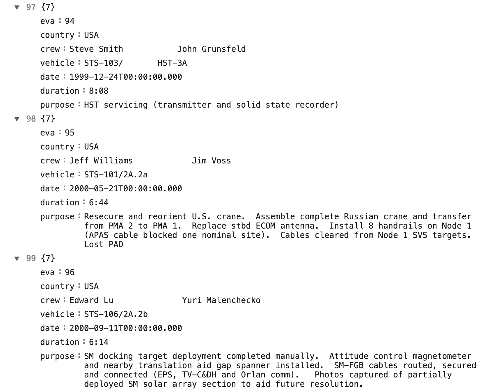
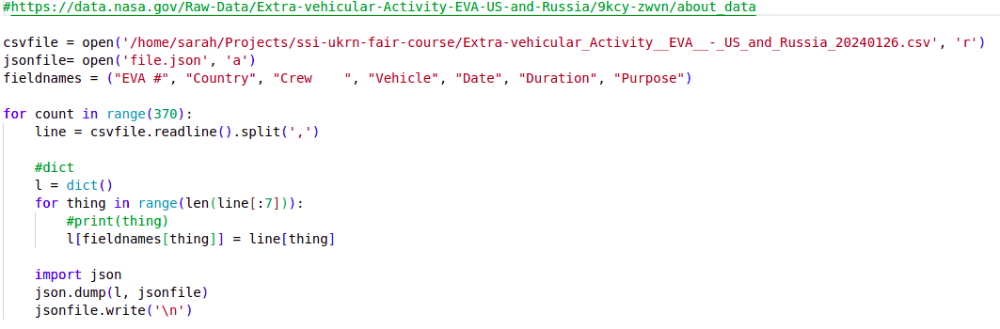
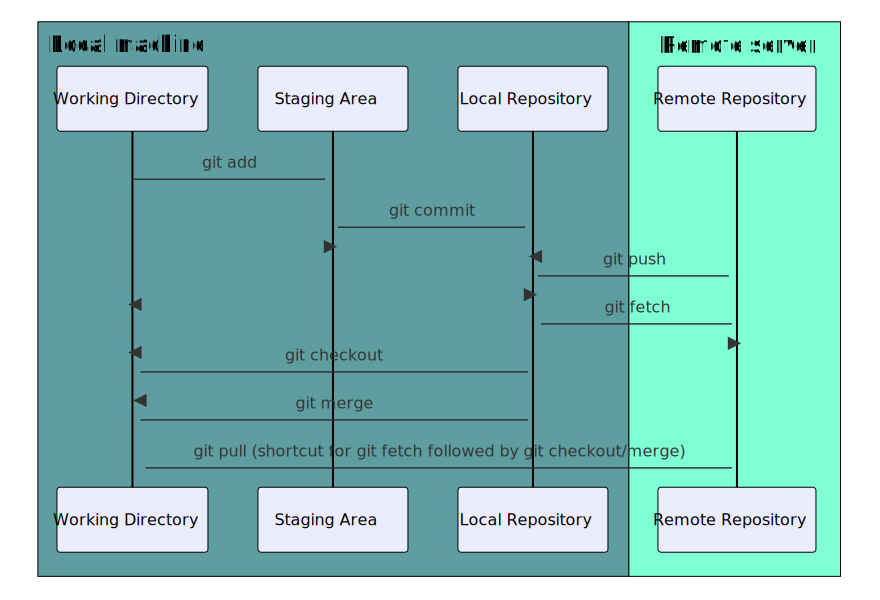
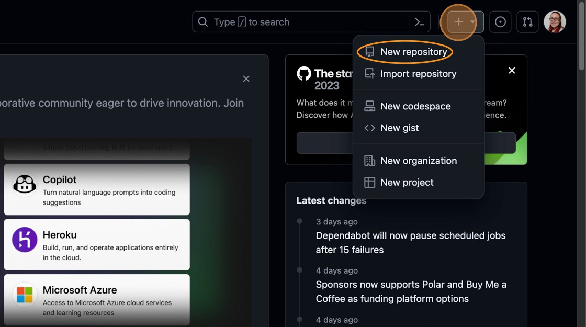
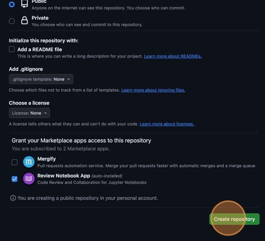
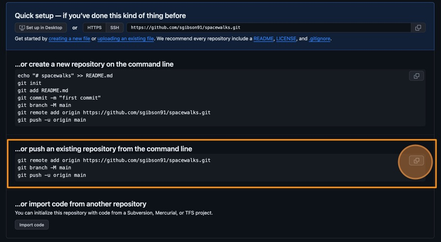

After completing this episode, participants should be able to:
Understand the concept of open and reproducible research
Understand why these principles are of value in the research
community
Jargon busting
Before we start with the course, below we cover the terminology and
explain terms, phrases, and concepts associated with software
development in reproducible research that we will use in this
course.
Computational reproducibility - obtaining
consistent results using the same input data, computational methods
(code), and conditions of analysis; work that can be independently
recreated from the same data and the same code (definition
by the Turing
Way’s “Guide to Reproducible Research”)
Reproducible research - the idea that scientific
results should be documented in such a way that their deduction is fully
transparent (definition from
Wikipedia)
Open research - research that is openly accessible
by others; concerned with making research more transparent, more
collaborative, more wide-reaching, and more efficient (definition from
Wikipedia)
FAIR - an acronym that stands for Findable,
Accessible, Interoperable, and Reusable
Sustainable software development - software
development practice that takes into account longevity and
maintainability of code (e.g. beyond the lifetime of the project),
environmental impact, societal responsibility and ethics in our software
practices.
Computational reproducibility
In this course, we use the term “reproducibility” as a synonym for
“computational reproducibility”.
What does open and reproducible research mean
to you?
Think about the questions below. Your instructors may ask you to
share your answers in a shared notes document and/or discuss them with
other participants.
What do you understand by the words “open” and “reproducible” in the
context of research?
How many people or groups can you list that might benefit from your
work being open and reproducible?
How many times did you wish that someone else’s work you came across
was more open or accessible to you? Can you provide some examples?
In this course, we adopt the Turing Way’s definitions:
Reproducible research: a result is reproducible
when the same analysis steps performed on the same data consistently
produce the same answer.
For example, two different people drop a pen 10 times each and every
time it falls to the floor. Or, we run the same code multiple times on
different machines and each time it produces the same result.
Replicable research: a result is replicable when
the same analysis performed on different data produces qualitatively
similar answers.
For example, instead of a pen, we drop a pencil, and it also falls
to the floor. Or, we collect two different datasets as part of two
different studies and run the same code over these datasets with the
same result each time.
Robust research: a result is robust when the same
data is subjected to different analysis workflows to answer the same
research question and a qualitatively similar or identical answer is
produced.
For example, I lend you my pen and you drop it out the window, and
it still falls to the floor. Or we run the same analysis implemented in
both Python and R over the same data and it produces the same
result.
Generalisable research: combining replicable and
robust findings allow us to form generalisable results that are broadly
applicable to different types of data or contexts.
For example, everything we drop - falls, therefore gravity
exists.
The Turing Way project illustration of
aspects of reproducible research by Scriberia, used under a CC-BY 4.0
licence, DOI:
10.5281/zenodo.3332807
In this course we mainly address the aspect of reproducibility -
i.e. enabling others to run our code to obtain the same results.
We can also further differentiate between:
Computational reproducibility: when detailed
information is provided about code, software, hardware and
implementation details.
Empirical reproducibility: when detailed
information is provided about non-computational empirical scientific
experiments and observations. In practice, this is enabled by making the
data and details of how it was collected freely available.
Statistical reproducibility: when detailed
information is provided, for example, about the choice of statistical
tests, model parameters, and threshold values. This mostly relates to
pre-registration of study design to prevent p-value hacking and other
manipulations.
In this course, we are concerned with computational reproducibility,
i.e. when the application of computer science and software engineering
is used to aid solving research problems.
Why do reproducible research?
Scientific transparency and rigor are key factors in research.
Scientific methodology and results need to be published openly and
replicated and confirmed by several independent parties. However,
research papers often lack the full details required for independent
reproduction or replication. Many attempts at reproducing or replicating
the results of scientific studies have failed in a variety of
disciplines ranging from psychology (The Open
Science Collaboration (2015)) to cancer sciences (Errington et al
(2021)). These are called the
reproducibility and replicability crises - ongoing
methodological crises in which the results of many scientific studies
are difficult or impossible to repeat.
Reproducible research is a practice that ensures that researchers can
repeat the same analysis multiple times with the same results. It offers
many benefits to those who practice it:
Reproducible research helps researchers remember how and why they
performed specific tasks and analyses; this enables easier explanation
of work to collaborators and reviewers.
Reproducible research enables researchers to quickly modify analyses
and figures - this is often required at all stages of research and
automating this process saves loads of time.
Reproducible research enables reusability of previously conducted
tasks so that new projects that require the same or similar tasks become
much easier and efficient by reusing or reconfiguring previous
work.
Reproducible research supports researchers’ career development by
facilitating the reuse and citation of all research outputs - including
both code and data.
Reproducible research is a strong indicator of rigor,
trustworthiness, and transparency in scientific research. This can
increase the quality and speed of peer review, because reviewers can
directly access the analytical process described in a manuscript. It
increases the probability that errors are caught early on - by
collaborators or during the peer-review process, helping alleviate the
reproducibility crisis.
However, reproducible research often requires that researchers
implement new practices and learn new tools. This course aims to teach
some of these practices and tools pertaining to the use of software to
conduct reproducible research.
Software in research and research software
Software is fundamental
to modern research - some of it would even be impossible without
software. From short, thrown-together temporary scripts written to help
with day-to-day research tasks, through an abundance of complex data
analysis spreadsheets, to the hundreds of software engineers and
millions of lines of code behind international efforts such as the Large
Hadron Collider, there are few areas of research where software does not
have a fundamental role.
However, it is important to note that not all software that is used
in research is “research software”. We define “research software” as
software or code that is used to generate, process or analyse results of
a research for publication. For example, software used to guide a
telescope is not considered “research software”. On the other hand,
formulas or macros in spreadsheets used to analyse data are considered
“research code” as they are a form of computer programming that allow
one to create, calculate, and change data sets in a number of different
ways.
Definition of “research software” from the
FAIR4RS working group, image by the Netherlands eScience Center licensed
under CC-BY 4.0
In the software
survey conducted by the Software Sustainability Institute in 2014,
92% of researchers indicated they used some kind of software to aid or
conduct their research. This was not limited to researchers from computational
science (aka scientific computing), the “hard” sciences or to those
involved in “traditional” uses of computing infrastructure such as
running simulations or developing computational methods. The use
of research software is ubiquitous and fairly even across all
disciplines.
Research software is increasingly being developed - researchers do
not just use “off the shelf” software and the majority of researchers
develop their own. In order to be able to produce quality software that
outputs correct and verifiable results and that can be reused over time
- researchers require training. This course teaches good practises and
reproducible working methods that are agnostic of a programming language
(although we will use Python code in our examples) and aims to provide
researchers with the tools and knowledge to feel confident when writing
good quality and sustainable software to support their research.
Typically, we think of such software as being FAIR.
In the rest of the course, we will explore what exactly we mean by
“FAIR research software”, why it is important and what practices can
help us along our “FAIRification” journey.
Further reading
We recommend the following resources for some additional reading on
the topic of this episode:
How do FAIR principles apply to software (and data)?
Objectives
After completing this episode, participants should be able to:
Explain the FAIR research principles in the context of research
software and data
Explain why these principles are of value in the research
community
Motivation
Think about the questions below. Your instructors may ask you to
share your answers in a shared notes document and/or discuss them with
other participants.
What motivated you to attend this course? Did you come by choice or
were you advised to attend?
What do you hope to learn or change in your current research
software practice? Describe how your knowledge, work or attitude may be
different afterwards.
FAIR software
FAIR stands for Findable, Accessible, Interoperable, and Reusable and
comprises a set of principles designed to increase the visibility and
usefulness of your research to others. The FAIR data principles, first
published in
2016, are widely known and applied today. Similar FAIR
principles for software have now been defined too. In general, they
mean:
Findable - software and its associated metadata
must be easy to discover by humans and machines.
Accessible - in order to reuse software, the
software and its metadata must be retrievable by standard protocols,
free and legally usable.
Interoperable - when interacting with other
software it must be done by exchanging data and/or metadata through
standardised protocols and application programming interfaces
(APIs).
Reusable - software should be usable (can be
executed) and reusable (can be understood, modified, built upon, or
incorporated into other software).
Each of the above principles can be achieved by a number of practices
listed below. This is not an exact science, and by all means the list
below is not exhaustive, but any of the practices that you employ in
your research software workflow will bring you closer to the gold
standard of a fully reproducible research.
Findable
In order to make your software more findable, you should:
Create a description of your software to make it discoverable by
search engines and other search tools
Place your software in a public software repository (and ideally
register it in a [general-purpose or domain-specific software
registry][software-registries])
Use a unique and persistent identifier (DOI) for your software
(e.g. by depositing your code on Zenodo), which is also useful for
citations - note that depositing your data/code on GitHub and similar
software repositories may not be enough as they may change their open
access model or disappear completely in the future, so archiving your
code means it stands a better chance at being preserved
Accessible
In order to make your software more accessible, you should:
Make sure people can freely, legally and easily get a copy your
software
Use code style conventions and code structure patterns, use comments
and create documentation to make your code comprehensible by people
(once they get a copy of it) - i.e. make your code accessible in the
intelligible sense
Interoperable
In order to make your software more interoperable, you should:
Explain the functionality of your software, so others can understand
how other tools can interoperate with it
Use standard formats for inputs and outputs
Communicate with other software via standard protocols and APIs
Reusable
In order to make your software more reusable, you should:
Document your software (including its functionality, and how to
install and run it) to make it more understandable by others who may
wish to reuse or extend it
Follow best practices for software development (including code
conventions, structure, readability and correctness)
Test your software and make sure it works on different
platforms/operating systems to make it more reusable
Give a licence to your software clearly stating how it can be
reused
State how to cite your software, so people can give you credit when
they reuse it
Include a contributor policy so that others can contribute to your
code and credit for contributions is provided
FAIR is a process, not a perfect metric
FAIR is not a binary metric - there is no such thing as “FAIR or”not
FAIR”.
FAIR is not a perfect metric, nor does it provide a full and
exhaustive software quality checklist. Software may be FAIR but still
not very good in terms of its functionality.
FAIR is not meant to criticise or discredit
work.
FAIR refers to the specific values of and describes
a set of principles to aid open and reproducible
research that can be a helpful guide for researchers who want to improve
their practices (by helping them see where they are on the FAIR
spectrum and help them on a journey to make
their software more FAIR).
FAIR as a 4D spectrum, image by the
Netherlands eScience Center licensed under CC-BY 4.0
We are going to explore the above practices on an example software
project we will be working on as part of this course.
Challenge
Think of a piece of software you use in your research - any
computational tool used for data gathering, modelling & simulation,
processing & visualising results or others. If you have a bit of
code or software you wrote yourself, in any language, feel free to use
that.
Think where on the FAIR spectrum it fits, using the following scale
as a guide for each principle:
1 - requires loads of improvement
2 - on a good path, but improvements still needed
3 - decent, a few things could still be improved
4 - very good, only tiny things to improve upon
5 - excellent
Software and data used in this course
We are going to follow a fairly typical experience of a new PhD or
postdoc joining a research group. They were emailed some data and
analysis code bundled in a .zip archive and written by
another group member who worked on similar things but has since left the
group. They need to be able to install and run this code on their
machine, check they can understand it and then adapt it to their own
project.
As part of the setup for this
course, you should have downloaded a .zip archive
containing the software project the new research team member was given.
Let’s unzip this archive and inspect its content in VS Code. The
software project contains:
a JSON file (data.json) - a snippet of which is shown
below - with data on extra-vehicular activities (EVAs or spacewalks)
undertaken by astronauts and cosmonauts from 1965 to 2013 (data provided
by NASA via its Open
Data Portal) 
a Python script (my code v2.py) containing some
analysis. 
The code in the Python script does some common research tasks:
Read in the data from the JSON file
Change the data from one data format to another and save to a file
in the new format (CSV)
Perform some calculations to generate summary statistics about the
data
Make a plot to visualise the data
Let’s have a critical look at this code and think about how FAIR this
piece of software is.
Discussion
Look at our code in VS Code and compare this data and code to the
software you chose earlier (or assess it on its own). Do you think it is
Findable, Accessible, Interoperable and Reusable? Give it a score from 1
to 5 in each category, as in the previous exercise, and then we will
discuss it together.
Here are some questions to help you assess where on the FAIR spectrum
the code is:
Findable
If these files were emailed to you, or sent on a chat platform, or
handed to you on a memory stick, how easy would it be to find them again
in 6 months, or 3 years?
If you asked your collaborator to give you the files again later on,
how would you describe them? Do they have a clear name?
If more data was added to the data set later, could you explain
exactly which data you used in the original analysis?
Accessible
If the person who gave you the files left your institution, how
would you get access to the files again?
Once you have the files, can you understand the code? Does it make
sense to you?
Do you need to log into anything to use this? Does it require
purchase or subscription to a service, platform or tool?
Interoperable
Is it clear what kind of input data it can read and what kind of
output data is produced? Will you be able to create the input files and
read the output files with the tools your community generally uses?
If you wanted to use this tool as part of a larger data processing
pipeline, does it allow you to link it with other tools in standard ways
such as an API or command-line interface?
Reusable
Can you run the code on your platform/operating system (is there
documentation that covers installation instructions)? What programs or
libraries do you need to install to make it work (and which versions)?
Are these commonly used tools in your field?
Do you have explicit permission to use your collaborators code in
your own research and do they expect credit of some form (paper
authorship, citation or acknowledgement)? Are you allowed to edit,
publish or share the files with others?
Is the language used familiar to you and people in your research
field? Can you read the variable names in the code and the column names
in the data file and understand what they mean?
Is the code written in a way that allows you to easily modify or
extend it? Can you easily see what parameters to change to make it
calculate a different statistic, or run on a different input file?
I would give the following scores:
F - 1/5
Positive: None
Negative: No descriptive name, identifier or version number. No way
to find again except through one person and they might not remember what
file you mean.
A - 2/5
Positive: No accounts or paid services needed. Python is free, the
data is free and under a shareable license
Negative: No way to get the code without that one person. Not clear
where the data comes or what license it has unless you check the URL in
the comment.
I - 3/5
Positive: CSV and JSON files are common and well documented formats.
They are machine- and human-readable. They could be generated by or fed
into other programs in a pipeline.
Negative: JSON might not be well used in some fields. No API or
CLI.
R - 2/5
Positive: Can ask collaborator for explicit permissions for using
and modifying and how to credit them, if they did not specify before.
Python is a common language.
Negative: Python and library versions not specified. Bad variable
names, hardcoded inputs, no clear structure or documentation.
Let’s now have a look into tools and practices that are commonly used
in research that can help us develop software in a more FAIR way.
Further reading
We recommend the following resources for some additional reading on
the topic of this episode:
Awesome
Research Software Registries - a list of research software
registries (by country, organisation, domain and programming language)
where research software can be registered to help promote its
discovery
What tools are available to help us develop research software in a
FAIR way?
How do the tools fit together to enable FAIR research?
Objectives
After completing this episode, participants should be able to:
Identify some key tools for FAIR research software
Explain how can these tools help us work in a FAIR way
Install and run these key tools on learner’s machines
In this course we will introduce you to a group of tools and
practices that are commonly used in research to help you develop
software in a FAIR way. You should already have these tools installed on
your machine following the setup
instructions. Here we will give an overview of the tools, how they
help you achieve the aims of FAIR research software and how they work
together. In later episodes we will describe some of these tools in more
detail.
Development environments
Virtual and integrated development environments (IDEs), such as VS
Code or PyCharm, help with running, testing, and debugging code. Virtual
environments further enable us to share our working environments with
others, making it easier to access, reuse and extend our code. IDEs
often provide integrations with other tools, e.g. version control and
command line terminals, enabling you to do many tasks from a single
environment, saving time in switching between different tools.
Command line terminals
Command line terminals (e.g. Bash, GitBash) enable us to run and test
our code without graphical user interfaces (GUI) afforded to us by IDEs
- this is sometimes needed for accessing and running our code remotely
on servers and high-performance systems without a GUI provision, where
time, memory and processing power are expensive or in high demand.
Version control systems are typically provided as command line tools,
making them often only accessible from command line terminals to enter
commands and access remote version control servers to backing up and
sharing our work.
Finally, command line tools use standard protocols for passing
parameters, inputs and outputs. This makes it easier to integrate ours
with other command line tools, allowing us to chain them and build up
complex and reproducible workflows and analysis pipelines using several
programs in different steps. If we write our software in a way which
provides such an interoperable command line interface - we will be able
to integrate it with other command line tools to automate and speed up
our work.
Standard input/output formats and communication protocols
Using standard data exchange, input and output formats and
communication protocols helps create interoperable software that can
more readily integrate with other tools into more complex pipelines -
increasing its interoperability and reusability.
Version control tools
Version control means knowing what changes were made to your code,
when and by whom - promoting code ownership, responsibility and credit.
When combined with software sharing and collaborative platforms such as
GitHub or GitLab, it facilitates code publication, sharing and
findability, teamwork and discussions about software and design
decisions, provides backup facilities for your code and speeds up
collaboration on shared code by allowing edits by more than one person
at a time.
Code style and structure conventions
Following code style conventions for your programming language and
standard code structure patterns that are agreed upon by the community
and other programmers are important practices to ensure that others find
it easy to read your code, reuse or extend it in their own examples and
applications.
Code testing
Testing ensures that your code is correct and does what it is set out
to do. When you write code you often feel very confident that it is
perfect, but when writing bigger codes or code that is meant to do
complex operations it is very hard to consider all possible edge cases
or notice every single typing mistake. Testing also gives other people
confidence in your code as they can see an example of how it is meant to
run and be assured that it does work correctly on their machine -
helping with code understanding and reusability.
Software- and project- level documentation
Documentation comes in many forms - from software-level
documentation including docstrings describing functions and
classes and in-line comments that explain lines of your code, to
project-level documentation and
metadata (including README, LICENCE, CITATION,
CONTRIBUTING, etc. files) that help to discover it, explain the legal
terms of reusing it, describe its functionality and how to install, run
and contribute to it, to whole websites full of documentation with
function definitions, usage examples, tutorials and guides. You many not
need as much documentation as a large commercial software product, but
making your code reusable relies on other people being able to
understand what your code does and how to use it.
Software repositories and registries
Having somewhere to share your code is fundamental to making it
findable and accessible. Your institution might have a code repository,
your research field may have a practice of sharing code via a specific
website, archive or journal, or your version control system might
include an online component that makes sharing different versions of
your code easy. You should check the rules or guidelines of your
institution, grant or domain on publishing code, as well as any licenses
of the code your software depends on or reuses.
Some examples of commonly used software repositories and registries
include:
general-purpose software repositories, such as GitHub and GitLab
programming language-specific software repositories, such as PyPi (for Python) and CRAN (for R)
software registries, such as BioTools (for biosciences) and Awesome
Research Software Registries (providing a list of research software
registries by country, organisation, domain and programming language)
where research software can be registered to help promote its
discovery
Persistent identifiers
Unique persistent identifiers, such as Digital Object Identifiers
(DOIs) provided by Zenodo, FigShare and similar digital archiving
services, and commits/tags/releases used by GitHub and similar code
sharing platforms, help with findability and accessibility of your
software, and can help you get credit for your work by providing citable
references.
Tools and practices summary
The table below provides a summary of how different tools and
practices help with the FAIR software principles.
Tools and practices
Findable
Accessible
Interoperable
Reusable
Virtual development environments
x
x
Integrated development environments/IDEs
x
Command line terminals - automated and reproducible pipelines
x
x
Standard formats - e.g. for data exchange (CSV, YAML)
x
x
x
Communication protocols - Command Line Interface (CLI) or
Application Programming Interface (API)
x
x
x
Version control tools
x
Code testing and correctness
x
x
Code style conventions
x
x
x
Software-level documentation (comments and docstrings, explaining
functionality)
Software repositories and registries - code sharing
x
x
Unique persistent identifiers - finding and citing software
x
x
Checking your setup
Let’s check your setup now to make sure you are ready for the rest of
this course.
Checking your setup
Open a command line terminal and look at the prompt. Compare what you
see in the terminal with your neighbour, does it look the same or
different? What information is it telling you and why might this be
useful? What other information might you want?
Run the following commands in a terminal to check you have installed
the tools listed in the Setup page. Compare the output with your
neighbour and see if you can see any differences.
Checking the command line terminal:
date
echo $SHELL
pwd
whoami
Checking Python:
python --version
python3 --version
which python
which python3
Checking Git and GitHub:
git --help
git config --list
ssh -T git@github.com
Checking VS Code:
code
code --list-extensions
The prompt is the $ character and any text that comes
before it, that is shown on every new line before you type in commands.
Type each of the commands one at a time and press enter. They should
give you a result by printing some text in the terminal.
The expected out put of each command is:
Today’s date
bash or zsh - this tells you what shell
language you are using. In this course we show examples in Bash.
Your “present working directory” or the folder where your shell is
running
Your username
In this course we are using Python 3. If
python --version gives you Python 2.x you may have two
versions of Python installed on your computer and need to be careful
which one you are using.
Use this command to be certain you are using Python version 3, not
2, if you have both installed.
The file path to where the Python version you are calling is
installed.
If you have more than one version these should be different paths,
if both 5. and 6. gave the same result then 7. and 8. should match as
well.
The help message explaining how to use the git
command.
You should have user.name, user.email and
core.editor set in your Git configuration. Check that the
editor listed is one you know how to use.
This checks if you have set up your connection to GitHub correctly.
If is says permission denied you may need to look at the
instructions for setting up SSH keys again on the Setup page.
This should open VSCode in your current working directory. macOS
users may need to first open VS Code and add
it to the PATH.
You should have the extensions GitLens, Git Graph, Python, JSON and
Excel Viewer installed to use in this course.
You may have noticed that our researcher has received the software
project they are meant to be working as a .zip archive via
email. In the next episode, we will learn a better practice for sharing
and tracking changes to a software project using version control
software Git and project sharing and collaboration platform GitHub.
Further reading
We recommend the following resources for some additional reading on
the topic of this episode:
How can a version control system help make my work
reproducible?
What does a standard version control workflow look like?
Objectives
After completing this episode, participants should be able to:
Create self-contained commits using Git to incrementally save
work
Inspect logs to review the history of work
Push new work from a local machine to a remote server
In this episode, we will begin to cover the basics of version control
and explore how this tool assists us in producing reproducible and
sustainable scientific projects. We will create a new software project
from our existing code, make some changes to it and track them with
version control, and then push those changes to a remote server for
safe-keeping.
What is a version control system?
Version control is the practice of tracking and managing changes to
files. Version control systems are software tools that assist in the
management of these file changes over time. They keep track of every
modification to the files in a special database that allows users to
“travel through time” and compare earlier versions of the files with the
current state.
Why use a version control system?
The main motivation as scientists to use version control in our
projects is for reproducibility purposes. As hinted to above, by
tracking and storing every change we make, we can more effectively
restore the state of the project at any point in time. This is
incredibly useful if we want to reproduce results from a specific
version of the code, or track down changes that broke some
functionality.
The other benefit we gain is that version control provides us with
the provenance of the project. As we make each change, we also leave a
message about what the change was and why it was made. This improves the
transparency of the project and makes it auditable, which is good
scientific practice.
Later on in this workshop, we will also see how using a version
control system allows many people to collaborate on the same project
without a lot of manual effort to combine different items of work.
Git version control system
Git is one of the version control systems around and the one we will
be using in this course. It is primarily used for source code management
in software development but it can be used to track changes in files in
general - it is particularly effective for tracking text-based files
(e.g. source code files in any programming language, CSV, Markdown,
HTML, CSS, Tex, etc. files).
The diagram below shows a typical software development lifecycle with
Git (starting from making changes locally) and the commonly used
commands to interact with different parts of the Git infrastructure. We
will cover all of the commands below during this course, this is just a
high level overview.

Software development lifecycle with Git
working directory - a local directory (including
any subdirectories) where your project files live and where you are
currently working. It is also known as the “untracked” area of Git. Any
changes to files will be marked by Git in the working directory. If you
make changes to the working directory and do not explicitly tell Git to
save them - you will likely lose those changes. Using
git add FILENAME command, you tell Git to start tracking
changes to file FILENAME within your working directory.
staging area (index) - once you tell Git to start
tracking changes to files (with git add FILENAME command),
Git saves those changes in the staging area on your local machine. Each
subsequent change to the same file needs to be followed by another
git add FILENAME command to tell Git to update it in the
staging area. To see what is in your working directory and staging area
at any moment (i.e. what changes is Git tracking), run the command
git status.
local repository - stored within the
.git directory of your project locally, this is where Git
wraps together all your changes from the staging area and puts them
using the git commit command. Each commit is a new,
permanent snapshot (checkpoint, record) of your project in time, which
you can share or revert to.
remote repository - this is a version of your
project that is hosted somewhere on the Internet (e.g., on GitHub,
GitLab or somewhere else). While your project is nicely
version-controlled in your local repository, and you have snapshots of
its versions from the past, if your machine crashes - you still may lose
all your work. Furthermore, you cannot share or collaborate on this
local work with others easily. Working with a remote repository involves
pushing your local changes remotely (using git push) and
pulling other people’s changes from a remote repository to your local
copy (using git fetch or git pull) to keep the
two in sync in order to collaborate (with a bonus that your work also
gets backed up to another machine). Note that a common best practice
when collaborating with others on a shared repository is to always do a
git pull before a git push, to ensure you have
any latest changes before you push your own.
Git is a distributed version control system allowing for multiple
people to be working on the same project (even the same file) at the
same time. Initially, we will use Git to start tracking changes to files
on our local machines; later on we will start sharing our work on GitHub
allowing other people to see and contribute to our work.
Create a new repository
Create a new directory in the Desktop folder for our
work, and then change the current working directory to the newly created
one:
BASH
$ cd ~/Desktop$ mkdir spacewalks$ cd spacewalks
We tell Git to make spacewalks a repository – a place
where Git can store versions of our files:
BASH
git init
We can check everything is setup correctly by asking Git to tell us
the status of our project:
BASH
$ git status
OUTPUT
On branch main
No commits yet
nothing to commit (create/copy files and use "git add" to track)
The exact wording of this output may be slightly different if you are
using a different version of Git.
Add initial files into our repository
During the setup for this
course, you have been provided with a .zip archive
containing, among other things, these two code and data files:
my code v2.py
data.json
We need to move these files into our Git folder. You can either drag
and drop the files from a file explorer window into the left pane of the
VS Code IDE, or you can use the mv
command in the command line terminal.
Let’s see what that has done to our repository by running
git status again:
BASH
git status
OUTPUT
On branch main
No commits yet
Untracked files:
(use "git add <file>..." to include in what will be committed)
data.json
my code v2.py
nothing added to commit but untracked files present (use "git add" to track)
This is telling us that Git has noticed the new files. The “untracked
files” message means that there is a file in the directory that Git
isn’t keeping track of. We can tell Git to track a file using
git add:
BASH
$ git add my\ code\ v2.py$ git add data.json
and then check the right thing happened:
BASH
$ git status
OUTPUT
On branch main
No commits yet
Changes to be committed:
(use "git rm --cached <file>..." to unstage)
new file: data.json
new file: my code v2.py
Git now knows that it’s supposed to keep track of
my code v2.py and data.json, but it hasn’t
recorded these changes as a commit yet. To get it to do that, we need to
run one more command:
BASH
$ git commit -m"Add an example script and dataset to work on"
OUTPUT
[main (root-commit) bf55eb7] Add and example script and dataset to work on
2 files changed, 437 insertions(+)
create mode 100644 data.json
create mode 100644 my code v2.py
When we run git commit, Git takes everything we have
told it to save by using git add and stores a copy
permanently in a special .git directory. This permanent
copy is called a commit (or revision).
We use the flag -m (for message) to record a short,
descriptive, and specific comment that will help us remember later on
what we did and why. If we only run git commit without the
-m option, Git will launch a text editor so that we can
write a longer message.
Good commit messages start with a brief (<50 characters) statement
about the changes made in the commit. Generally, the message should
complete the sentence “If applied, this commit will…”. If you want to go
into more detail, add a blank line between the summary line and your
additional notes. Use this additional space to explain why you made
changes and/or what their impact will be.
If we run git status now, we see:
BASH
$ git status
OUTPUT
On branch main
nothing to commit, working tree clean
This tells us that everything is up to date.
Where are my changes?
If we run ls at this point, we will still see only two
files, the script and the dataset. That’s because Git saves information
about files’ history in the special .git directory
mentioned earlier so that our filesystem does not become cluttered (and
so that we cannot accidentally edit or delete an old version).
Make a change
Did you notice how when we were typing the Python script into the
terminal, we had to add a slash before the space like this:
my\ code\ v2.py? Using a backslash in this way is called
‘escaping’ and it lets the terminal know to treat the space as part of
the filename, and not a separate argument. However, it is pretty
annoying and considered bad practice to have spaces in your filenames
like this, especially if you will be manipulating them from the
terminal. So, let’s go ahead and remove the space from the filename
altogether and replace it with an underscore _ instead. You
can use the mv command again like so:
BASH
$ mv my\ code\ v2.py my_code_v2.py
If you run git status again, you’ll see Git has noticed
the change in the filename.
BASH
$ git status
OUTPUT
On branch main
Changes not staged for commit:
(use "git add/rm <file>..." to update what will be committed)
(use "git restore <file>..." to discard changes in working directory)
deleted: my code v2.py
Untracked files:
(use "git add <file>..." to include in what will be committed)
my_code_v2.py
no changes added to commit (use "git add" and/or "git commit -a")
Add and commit the changed file
Using the Git commands demonstrated so far, save the change you just
made to the Python script.
Remember, commit messages should be descriptive and complete the
sentence “If applied, this commit will…”. You can also use
git status to check the status of your project at any
time.
To save the changes to the renamed Python file, use the following Git
commands:
BASH
$ git add my\ code\ v2.py my_code_v2.py$ git status
OUTPUT
On branch main
Changes to be committed:
(use "git restore --staged <file>..." to unstage)
renamed: my code v2.py -> my_code_v2.py
BASH
$ git commit -m"Replace spaces in Python filename with underscores"
OUTPUT
[main 8ea2a0b] Replace spaces in Python filename with underscores
1 file changed, 0 insertions(+), 0 deletions(-)
rename my code v2.py => my_code_v2.py (100%)
Advanced solution
We initially renamed the Python file using the mv
command, and we than had to git addbothmy_code_v2.py and my\ code\ v2.py.
Alternatively, we could have used Git’s own mv command like
so:
BASH
$ git mv my\ code\ v2.py my_code_v2.py$ git status
OUTPUT
On branch main
Changes to be committed:
(use "git restore --staged <file>..." to unstage)
renamed: my code v2.py -> my_code_v2.py
git mv is the equivalent of running mv ...
followed immediately by git add ... of the old and new
filenames, so the changes have been staged automatically. All that needs
to be done is to commit them.
BASH
$ git commit -m"Replace spaces in Python filename with underscores"
OUTPUT
[main 6499bd7] Replace spaces in Python filename with underscores
1 file changed, 0 insertions(+), 0 deletions(-)
rename my code v2.py => my_code_v2.py (100%)
Rename our data and output files
Now that we have seen how to rename files in Git, let’s:
give our input data file and script more meaningful names and
choose informative file names for our output data file and
plot.
First let’s update file names in our script using VS Code.
Now, let’s actually rename our files on the file system using git and
commit our changes.
BASH
git mv data.json eva-data.jsongit mv my_code_v2.py eva_data_analysis.pygit add eva_data_analysis.pygit status
OUTPUT
On branch main
Changes to be committed:
(use "git restore --staged <file>..." to unstage)
renamed: data.json -> eva-data.json
renamed: my_code_v2.py -> eva_data_analysis.py
Finally, let’s commit out changes:
BASH
git commit -m"Implement informative file names"
Commit messages
We have already met the concept of commit messages when we made and
stored changes to our code files. Commit messages are short descriptions
of, and the motivation for, what a commit will achieve. It is therefore
important to take some time to ensure these commit messages are helpful
and descriptive, as when work is reviewed (by your future self or a
collaborator) they provide the context about what changes were made and
why. This can make tracking down specific changes in commits much
easier, without having to inspect the code or files themselves.
Generally, commit messages should complete the sentence “If applied,
this commit will…”. Most often a short, 50 character (ish) title will
suffice, but a longer-form description of the changes can also be
provided by leaving a blank space between the summary line and the rest
of the message. There are many different conventions that can be used
for commit messages that range from very structured (such as conventional
commits) to the fun (such as gitmoji). The important thing is that it
is clear to the reader what a commit is doing and why. If a project is
using a specific commit message convention, this will often be described
in their contributing
guidelines.
Good commit messages
Read the two commit messages below. In pairs or small groups, discuss
which messages help you understand more about what the commit author
did. What about the commit messages do you find helpful or not?
[main 8baf69d] Change variable name from columns to column_headers
1 file changed, 1 insertion(+), 1 deletion(-)
Commit message (2) is the better commit message since it is more
descriptive about what the author did. This message could be improved
further by adding a blank line then further describing the change
discussing, for example, why the variable name was changed.
Self-contained commits
If we want our commit messages to be descriptive and help us
understand the changes in the project over time, then we also have to
make commits that are very self-contained. That is to say that each
commit we make should only change one, logical thing. By “logical” here,
we mean that one aspect of updating the files has been achieved to
completion - such as adding docstrings or refactoring a function - we
don’t mean that changes are committed line-by-line. See the “Things
to avoid when creating commits” section of Openstack’s
“Git Commit Good Practice” documentation for examples of logical,
self-contained commits, and commits that don’t follow this practice.
The reasons that self-contained commits are important are that: it
helps with reviewing changes if each commit tackles one step; if code
breaks, tracking down the specific change that caused the break is
simpler; if you need to undo changes, you can remove them in small
increments, rather than losing a lot of unrelated work along with the
change you do want to remove.
Understanding commit contents
Below are the diffs of two commits. A diff
shows the differences in a file (or files!) compared to the previous
commit in the history so you can what has changed. The lines that begin
with +s represent additions, and the lines that begin with
-s represent deletions. Compare these two commit
diffs. Can you understand what the commit author was trying
to achieve in each commit? How many changes have they tried to make in
each commit? Discuss in pairs or small groups.
The git diff presented in option (1) is cleaner. The
author has only tackled one thing: placing the import statements at the
top of the file. This kind of commit is much easier to review in
isolation, and will be easier to track down if git bisect
is required.
Git logs
If we want to know what we’ve done recently, we can ask Git to show
us the project’s history using git log:
BASH
$ git log
OUTPUT
commit 6499bd731ab50fde2731ce2642f143cea86450b6 (HEAD -> main)
Author: Sarah Gibson <drsarahlgibson@gmail.com>
Date: Mon Jun 17 11:55:17 2024 +0100
Replace spaces in Python filename with underscores
commit bf55eb7639a6508658aaa1bfeaeb9f115d1bcc40
Author: Sarah Gibson <drsarahlgibson@gmail.com>
Date: Mon Jun 17 11:52:02 2024 +0100
Add and example script and dataset to work on
This output demonstrates why it is important to write meaningful and
descriptive commit messages. Without the messages, we will only have the
commit hashes (the strings of random numbers and letters after “commit”)
to identify each commit, which would be impossible for us.
We may need to inspect our recent commits to establish where a bug
was introduced or because we have decided that our recent work isn’t
suitable and we wish to discard it and start again. Once we have
identified the last commit we want to keep, we can revert the state of
our project back to that commit with a few different methods:
git revert:
This command reverts a commit by creating a new commit that reverses the
action of the supplied commit or list of commits. Because this command
creates new commits, your Git history is more complete and tells the
story of exactly what work you did, i.e., deciding to discard some
work.
git reset:
This command will recover the state of the project at the specified
commit. What is done with the commits you had mave since is defined by
some optional flags:
--soft: Any changes you have made since the specified
commit would be preserved and left as “Changes to be committed”
--mixed: Any changes you have made since the specified
commit would be preserved but not marked for commit (this is the default
action)
--hard: Any changes you have made since the specified
commit are discarded.
Using git reset command produces a “cleaner” history,
but does not tell the full story and your work.
Interacting with a remote Git server
Git is also a distributed version control system, allowing us to
synchronise work between any two or more copies of the same repository -
the ones that are not located on your machine. So far we have have been
working with a project on our local machines and, even though we have
been incrementally saving our work in a way that is recoverable (version
control), if anything happened to our laptops, the whole project would
be lost. However, we can use the distribution aspect of Git to push our
projects and histories to a server (someone else’s computer) so that
they are accessible and retrievable if the worst were to happen to our
machines.
Git - distributed version control system, image
from W3Docs (freely available)
GitHub is an online software
development platform that can act as a central remote server. It uses
Git underneath and provides facilities for storing, tracking, and
collaborating on software projects. Other Git hosting services are
available, such as GitLab and Bitbucket.
Distributing our projects in this way also opens us up to
collaboration, since colleagues would be able to access our projects,
make their own copies on their machines, and conduct their own work.
We will now go through how to push a local project on GitHub and share it publicly.
In your browser, navigate to https://github.com and sign into your account
In the top right hand corner of the screen, there is a menu
labelled “+” with a dropdown. Click the dropdown and select “New
repository” from the options.

Creating a new GitHub repository
You will be presented with some options to fill in or select
while creating your repository. In the “Repository Name” field, type
“spacewalks”. This is the name of your project and matches the name of
your local folder.
Naming the GitHub repository
Ensure the visibility of the repository is “Public” and leave all
other options blank. Since this repository will be connected to a local
repository, it needs to be empty which is why we don’t initialise with a
README or add a license or .gitignore file. Click “Create
repository” at the bottom of the page.

Complete GitHub repository
creation
Now you have created your repository, you need to send the files
and the history you have stored on your local computer to GitHub’s
servers. GitHub provides some instructions on how to do that for
different scenarios. You want to use the instructions under the heading
“…or push an existing repository from the command line”. These
instructions will look like this:
You can copy these commands using the button that looks like two
overlapping squares to the right-hand side of the commands. Paste them
into your terminal and run them.

Copy the commands to sync the local and
remote repositories
If you refresh your browser window, you should now see the two
files my-code-v2.py and data.json visible in
the GitHub repository, matching what you have locally on your
machine.
Let’s explain a bit more about what those commands did…
This command tells Git to create a remote called
“origin” and link it to the URL of your GitHub repository. A
remote is a version control concept where two (or more)
repositories are connected to each other in such a way that they can be
kept in sync by exchanging commits. “origin” is a name used to refer to
the remote repository. It could be called anything, but “origin” is a
convention that is often used by default in Git and GitHub since it
indicates which repository is considered the “source of truth”,
particularly useful when many people are collaborating on the same
repository.
BASH
git branch -M main
git branch is a command used to manage branches. We will
discuss branches later on in the course. This command ensures the branch
we are working on is called “main”. This will be the default branch of
the project for everyone working on it.
BASH
git push -u origin main
The git push command is used to update remote references
with any changes you have made locally. This command tells Git to update
the “main” branch on the “origin” remote. The -u flag
(short for --set-upstream) will set a tracking reference,
so that in the future git push can be run without the need
to specify the remote and reference name.
Terminology
In pairs or small groups, discuss the difference between the terms
remote and origin. What is the definition of
each term?
remote: a version control concept where two (or more)
repositories are linked together in such a way that they can be kept in
sync by exchanging commits
origin: a common Git/GitHub naming convention for the
remote repository to designate the source of truth for
collaborators
Summary
During this episode, we have covered the basics of using version
control to track changes to our projects. We have seen how to: create
new projects, incrementally save progress, construct informative commit
messages and content, inspect the history of our projects and retrieve
the state, and push our projects to distributed servers.
These skills are critical to reproducible and sustainable science
since using version control makes our work self-documenting - the commit
messages provide the narrative of what changed and why - and we can
recover the exact state of our projects at a specific time, so we can
more reliably run the “same” code again. We can also back up our
projects by pushing them to distributed, remote servers and reduce the
risk of data loss over the course of a project’s lifetime.
Version control is a vast topic and we have only covered the absolute
basics here as a brief introduction. For a deeper and more complete dive
into the subject matter, please see the “Further reading” section
below.
Further reading
We recommend the following resources for some additional reading on
the topic of this episode:
What are virtual environments in software development and why use
them?
How can we manage Python virtual coding environments and external
(third-party) libraries on our machines?
Objectives
After completing this episode, participants should be able to:
Set up a Python virtual coding environment for a software project
using venv and pip.
So far we have created a local Git repository to track changes in our
software project and pushed it to GitHub to enable others to see and
contribute to it.
We now want to start developing the code further. If we have a look
at our script, we may notice a few import lines like the
following:
PYTHON
import json
PYTHON
import csv
PYTHON
import datetime as dt
PYTHON
import matplotlib.pyplot as plt
This means that our code requires several external
libraries (also called third-party packages or dependencies) -
json, csv, datetime and
matplotlib.
Python applications often use external libraries that do not come as
part of the standard Python distribution. This means that you will have
to use a package manager tool to install them on your
system. Applications will also sometimes need a specific version of an
external library (e.g. because they were written to work with feature,
class, or function that may have been updated in more recent versions),
or a specific version of Python interpreter. This means that each Python
application you work with may require a different setup and a set of
dependencies so it is useful to be able to keep these configurations
separate to avoid confusion between projects. The solution for this
problem is to create a self-contained virtual
environment per project, which contains a particular version of
Python installation plus a number of additional external libraries.
Virtual development environments
So what exactly are virtual environments, and why use them?
A Python virtual environment helps us create an isolated
working copy of a software project that uses a specific version
of Python interpreter together with specific versions of a number of
external libraries installed into that virtual environment. Python
virtual environments are implemented as directories with a particular
structure within software projects, containing links to specified
dependencies allowing isolation from other software projects on your
machine that may require different versions of Python or external
libraries.
It is recommended to create a separate virtual environment for each
project. Then you do not have to worry about changes to the environment
of the current project you are working on affecting other projects - you
can use different Python versions and different versions of the same
third party dependency by different projects on your machine
independently from one another.
Another big motivator for using virtual environments is that they
make sharing your code with others much easier - as we will see shortly
you can record your virtual environment in a special file and share it
with your collaborators who can then recreate the same development
environment on their machines.
You do not have to worry too much about specific versions of external
libraries that your project depends on most of the time. Virtual
environments also enable you to always use the latest available version
without specifying it explicitly. They also enable you to use a specific
older version of a package for your project, should you need to.
Managing virtual environments
There are several command line tools used for managing Python virtual
environments - we will use venv, available by default from
the standard Python distribution since
Python 3.3.
Part of managing your (virtual) working environment involves
installing, updating and removing external packages on your system. The
Python package manager tool pip is most commonly used for
this - it interacts and obtains the packages from the central repository
called Python Package Index (PyPI).
So, we will use venv and pip in combination
to help us create and share our virtual development environments.
Creating virtual environments
Creating a virtual environment with venv is done by
executing the following command:
where /path/to/new/virtual/environment is a path to a
directory where you want to place it - conventionally within your
software project so they are co-located. This will create the target
directory for the virtual environment.
For our project let’s create a virtual environment called
“venv_spacewalks” from our project’s root directory.
Firstly, ensure you are located within the project’s root
directory:
BASH
$ cd /path/to/spacewalks
BASH
$ python3 -m venv venv_spacewalks
If you list the contents of the newly created directory
“venv_spacewalks”, on a Mac or Linux system (slightly different on
Windows as explained below) you should see something like:
BASH
$ ls -l venv_spacewalks
OUTPUT
total 8
drwxr-xr-x 12 alex staff 384 5 Oct 11:47 bin
drwxr-xr-x 2 alex staff 64 5 Oct 11:47 include
drwxr-xr-x 3 alex staff 96 5 Oct 11:47 lib
-rw-r--r-- 1 alex staff 90 5 Oct 11:47 pyvenv.cfg
So, running the python -m venv venv_spacewalks command
created the target directory called “venv_spacewalks” containing:
pyvenv.cfg configuration file with a home key pointing
to the Python installation from which the command was run,
bin subdirectory (called Scripts on
Windows) containing a symlink of the Python interpreter binary used to
create the environment and the standard Python library,
lib/pythonX.Y/site-packages subdirectory (called
Lib\site-packages on Windows) to contain its own
independent set of installed Python packages isolated from other
projects, and
various other configuration and supporting files and
subdirectories.
Once you’ve created a virtual environment, you will need to activate
it.
Activating the virtual environment will change your command line’s
prompt to show what virtual environment you are currently using
(indicated by its name in round brackets at the start of the prompt),
and modify the environment so that running Python will get you the
particular version of Python configured in your virtual environment.
You can verify you are using your virtual environment’s version of
Python by checking the path using the command which:
BASH
(venv_spacewalks)$ which python3
When you’re done working on your project, you can exit the
environment with:
BASH
(venv_spacewalks)$ deactivate
If you’ve just done the deactivate, ensure you
reactivate the environment ready for the next part:
Note that, since our software project is being tracked by Git, the
newly created virtual environment will show up in version control - we
will see how to handle it using Git in one of the subsequent
episodes.
Installing external packages
We noticed earlier that our code depends on four external
packages/libraries - json, csv,
datetime and matplotlib. As of Python 3.5,
Python comes with in-built JSON and CSV libraries - this means there is
no need to install these additional packages (if you are using a fairly
recent version of Python), but you still need to import them in any
script that uses them. However, we still need to install packages
datetime and matplotlib as they do not come as
standard with Python distribution.
To install the latest version of packages datetime and
matplotlib with pip you use pip’s
install command and specify the package’s name, e.g.:
The above commands have installed packages datetime and
matplotlib in our currently active
venv_spacewalks environment and will not affect any other
Python projects we may have on our machines.
If you run the python3 -m pip install command on a
package that is already installed, pip will notice this and
do nothing.
To install a specific version of a Python package give the package
name followed by == and the version number,
e.g. python3 -m pip install matplotlib==3.5.3.
To specify a minimum version of a Python package, you can do
python3 -m pip install matplotlib>=3.5.1.
To upgrade a package to the latest version,
e.g. python -m pip install --upgrade matplotlib.
To display information about a particular installed package do:
BASH
(venv_spacewalks)$ python3 -m pip show matplotlib
OUTPUT
Name: matplotlib
Version: 3.9.0
Summary: Python plotting package
Home-page:
Author: John D. Hunter, Michael Droettboom
Author-email: Unknown <matplotlib-users@python.org>
License: License agreement for matplotlib versions 1.3.0 and later
=========================================================
...
Location: /opt/homebrew/lib/python3.11/site-packages
Requires: contourpy, cycler, fonttools, kiwisolver, numpy, packaging, pillow, pyparsing, python-dateutil
Required-by:
To list all packages installed with pip (in your current
virtual environment):
To uninstall a package installed in the virtual environment do:
python -m pip uninstall <package-name>. You can also
supply a list of packages to uninstall at the same time.
Sharing virtual environments
You are collaborating on a project with a team so, naturally, you
will want to share your environment with your collaborators so they can
easily ‘clone’ your software project with all of its dependencies and
everyone can replicate equivalent virtual environments on their
machines. pip has a handy way of exporting, saving and
sharing virtual environments.
To export your active environment - use
python -m pip freeze command to produce a list of packages
installed in the virtual environment. A common convention is to put this
list in a requirements.txt file in your project’s root
directory:
The first of the above commands will create a
requirements.txt file in your current directory. Yours may
look a little different, depending on the version of the packages you
have installed, as well as any differences in the packages that they
themselves use.
The requirements.txt file can then be committed to a
version control system (we will see how to do this using Git in a
moment) and get shipped as part of your software and shared with
collaborators and/or users.
Note that you only need to share the small
requirements.txt file with your collaborators - and not the
entire venv_spacewalks directory with packages contained in your
virtual environment. We need to tell Git to ignore that directory, so it
is not tracked and shared - we do this by creating a file
.gitignore in the root directory of our project and adding
a line venv_spacewalks to it.
Let’s now put requirements.txt under version control and
share it along with our code.
BASH
(venv_spacewalks)$ git add requirements.txt(venv_spacewalks)$ git commit -m"Initial commit of requirements.txt."(venv_spacewalks)$ git push origin main
Your collaborators or users of your software can now download your
software’s source code and replicate the same virtual software
environment for running your code on their machines using
requirements.txt to install all the necessary depending
packages.
To recreate a virtual environment from requirements.txt,
from the project root one can do the following:
As your project grows - you may need to update your environment for a
variety of reasons, e.g.:
one of your project’s dependencies has just released a new version
(dependency version number update),
you need an additional package for data analysis (adding a new
dependency), or
you have found a better package and no longer need the older package
(adding a new and removing an old dependency).
What you need to do in this case (apart from installing the new and
removing the packages that are no longer needed from your virtual
environment) is update the contents of the requirements.txt
file accordingly by re-issuing pip freeze command and
propagate the updated requirements.txt file to your
collaborators via your code sharing platform.
Running the code
We are now setup to run our code from the newly created virtual
environment:
BASH
(venv_spacewalks)$ python3 eva_data_analysis.py
You should get a pop up window with a graph. Let’s inspect the code
in a more detail, see if we can understand and improve it.
Further reading
We recommend the following resources for some additional reading on
the topic of this episode:
Virtual environments keep Python versions and dependencies required
by different projects separate.
A Python virtual environment is itself a directory structure.
You can use venv to create and manage Python virtual
environments, and pip to install and manage Python external
(third-party) libraries.
By convention, you can save and export your Python virtual
environment in a requirements.txt in your project’s root
directory, which can then be shared with collaborators/users and used to
replicate your virtual environment elsewhere.
What types of documentation can I include to improve the readability
of my code?
Objectives
After completing this episode, participants should be able to:
Organise code into reusable functions that achieve a singular
purpose
Choose function and variable names that help explain the purpose of
the function or variable
Write informative comments and docstrings to provide more detail
about what the code is doing
In this episode, we will introduce the concept of readable code and
consider how it can help create reusable scientific software and empower
collaboration between researchers.
When someone writes code, they do so based on requirements that are
likely to change in the future. Requirements change because software
interacts with the real world, which is dynamic. When these requirements
change, the developer (who is not necessarily the same person who wrote
the original code) must implement the new requirements. They do this by
reading the original code to understand the different abstractions, and
identify what needs to change. Readable code facilitates the reading and
understanding of the abstraction phases and, as a result, facilitates
the evolution of the codebase. Readable code saves future developers’
time and effort.
In order to develop readable code, we should ask ourselves: “If I
re-read this piece of code in fifteen days or one year, will I be able
to understand what I have done and why?” Or even better: “If a new
person who just joined the project reads my software, will they be able
to understand what I have written here?”
We will now learn about a few software best practices we can follow
to help create more readable code.
Activate your virtual environment
If it is not already active, make sure to activate your virtual
environment from the root of the software project directory:
BASH
$ source venv_spacewalks/bin/activate # Mac or Linux$ source venv_spacewalks/Scripts/activate # Windows(venv_spacewalks)$
Place import statements at the top
Let’s have a look our code again - the first thing we may notice is
that our script currently places import statements throughout the code.
Conventionally, all import statements are placed at the top of the
script so that dependant libraries are clearly visible and not buried
inside the code (even though there are standard ways of describing
dependencies - e.g. using requirements.txt file). This will
help readability (accessibility) and reusability of our code.
Our code after the modification should look like the following.
PYTHON
import jsonimport csvimport datetime as dtimport matplotlib.pyplot as plt# https://data.nasa.gov/resource/eva.json (with modifications)data_f =open('./eva-data.json', 'r')data_t =open('./eva-data.csv','w')g_file ='./cumulative_eva_graph.png'fieldnames = ("EVA #", "Country", "Crew ", "Vehicle", "Date", "Duration", "Purpose")data=[]for i inrange(374): line=data_f.readline()print(line) data.append(json.loads(line[1:-1]))#data.pop(0)## Comment out this bit if you don't want the spreadsheetw=csv.writer(data_t)time = []date =[]j=0for i in data:print(data[j])# and this bit w.writerow(data[j].values())if'duration'in data[j].keys(): tt=data[j]['duration']if tt =='':passelse: t=dt.datetime.strptime(tt,'%H:%M') ttt = dt.timedelta(hours=t.hour, minutes=t.minute, seconds=t.second).total_seconds()/(60*60)print(t,ttt) time.append(ttt)if'date'in data[j].keys(): date.append(dt.datetime.strptime(data[j]['date'][0:10], '%Y-%m-%d'))#date.append(data[j]['date'][0:10])else: time.pop(0) j+=1t=[0]for i in time: t.append(t[-1]+i)date,time =zip(*sorted(zip(date, time)))plt.plot(date,t[1:], 'ko-')plt.xlabel('Year')plt.ylabel('Total time spent in space to date (hours)')plt.tight_layout()plt.savefig(g_file)plt.show()
Let’s make sure we commit our changes.
BASH
(venv_spacewalks)$ git add eva_data_analysis.py(venv_spacewalks)$ git commit -m"Move import statements to the top of the script"
Use meaningful variable names
Variables are the most common thing you will assign when coding, and
it’s really important that it is clear what each variable means in order
to understand what the code is doing. If you return to your code after a
long time doing something else, or share your code with a colleague, it
should be easy enough to understand what variables are involved in your
code from their names. Therefore we need to give them clear names, but
we also want to keep them concise so the code stays readable. There are
no “hard and fast rules” here, and it’s often a case of using your best
judgment.
Some useful tips for naming variables are:
Short words are better than single character names. For example, if
we were creating a variable to store the speed to read a file,
s (for ‘speed’) is not descriptive enough but
MBReadPerSecondAverageAfterLastFlushToLog is too long to
read and prone to misspellings. ReadSpeed (or
read_speed) would suffice.
If you are finding it difficult to come up with a variable name that
is both short and descriptive, go with the short version and use an
inline comment to describe it further (more on those in the next
section). This guidance does not necessarily apply if your variable is a
well-known constant in your domain - for example, c represents
the speed of light in physics.
Try to be descriptive where possible and avoid meaningless or funny
names like foo, bar, var,
thing, etc.
There are also some restrictions to consider when naming variables in
Python:
Only alphanumeric characters and underscores are permitted in
variable names.
You cannot begin your variable names with a numerical character as
this will raise a syntax error. Numerical characters can be included in
a variable name, just not as the first character. For example,
read_speed1 is a valid variable name, but
1read_speed isn’t. (This behaviour may be different for
other programming languages.)
Variable names are case sensitive. So speed_of_light
and Speed_Of_Light are not the same.
Programming languages often have global pre-built functions, such as
input, which you may accidentally overwrite if you assign a
variable with the same name and no longer be able to access the original
input function. In this case, opting for something like
input_data would be preferable. Note that this behaviour
may be explicitly disallowed in other programming languages but is not
in Python.
Give a descriptive name to a variable
Below we have a variable called var being set the value
of 9.81. var is not a very descriptive name here as it
doesn’t tell us what 9.81 means, yet it is a very common constant in
physics! Go online and find out which constant 9.81 relates to and
suggest a new name for this variable.
Edit the code as follows to use descriptive variable names:
Change data_f to input_file
Change data_t to output_file
Change g_file to graph_file
What other variable names in our code would benefit from
renaming?
Commit your changes to your repository. Remember to use an
informative commit message.
Updated code:
PYTHON
import jsonimport csvimport datetime as dtimport matplotlib.pyplot as plt# https://data.nasa.gov/resource/eva.json (with modifications)input_file =open('./eva-data.json', 'r')output_file =open('./eva-data.csv', 'w')graph_file ='./cumulative_eva_graph.png'fieldnames = ("EVA #", "Country", "Crew ", "Vehicle", "Date", "Duration", "Purpose")data=[]for i inrange(374): line=input_file.readline()print(line) data.append(json.loads(line[1:-1]))#data.pop(0)## Comment out this bit if you don't want the spreadsheetw=csv.writer(output_file)time = []date =[]j=0for i in data:print(data[j])# and this bit w.writerow(data[j].values())if'duration'in data[j].keys(): tt=data[j]['duration']if tt =='':passelse: t=dt.datetime.strptime(tt,'%H:%M') ttt = dt.timedelta(hours=t.hour, minutes=t.minute, seconds=t.second).total_seconds()/(60*60)print(t,ttt) time.append(ttt)if'date'in data[j].keys(): date.append(dt.datetime.strptime(data[j]['date'][0:10], '%Y-%m-%d'))#date.append(data[j]['date'][0:10])else: time.pop(0) j+=1t=[0]for i in time: t.append(t[-1]+i)date,time =zip(*sorted(zip(date, time)))plt.plot(date,t[1:], 'ko-')plt.xlabel('Year')plt.ylabel('Total time spent in space to date (hours)')plt.tight_layout()plt.savefig(graph_file)plt.show()
We should also rename variables w, t,
ttt to be more descriptive.
Our script currently reads the data line-by-line from the JSON data
file and uses custom code to manipulate the data. Variables of interest
are stored in lists but there are more suitable data structures
(e.g. data frames) to store data in our case. By choosing custom code
over standard and well-tested libraries, we are making our code less
readable and understandable and more error-prone.
The main functionality of our code can be rewritten as follows using
the Pandas library to load and manipulate the data in data
frames.
First, we need to install this dependency into our virtual
environment (which should be active at this point).
BASH
(venv_spacewalks)$ python -m pip install pandas
The code should now look like:
PYTHON
import matplotlib.pyplot as pltimport pandas as pd# Data source: https://data.nasa.gov/resource/eva.json (with modifications)input_file =open('./eva-data.json', 'r')output_file =open('./eva-data.csv', 'w')graph_file ='./cumulative_eva_graph.png'eva_df = pd.read_json(input_file, convert_dates=['date'])eva_df['eva'] = eva_df['eva'].astype(float)eva_df.dropna(axis=0, inplace=True)eva_df.sort_values('date', inplace=True)eva_df.to_csv(output_file, index=False)eva_df['duration_hours'] = eva_df['duration'].str.split(":").apply(lambda x: int(x[0]) +int(x[1])/60)eva_df['cumulative_time'] = eva_df['duration_hours'].cumsum()plt.plot(eva_df['date'], eva_df['cumulative_time'], 'ko-')plt.xlabel('Year')plt.ylabel('Total time spent in space to date (hours)')plt.tight_layout()plt.savefig(graph_file)plt.show()
We should replace the existing code in our Python script
eva_data_analysis.py with the above code and commit the
changes. Remember to use an informative commit message.
BASH
(venv_spacewalks)$ git add eva_data_analysis.py(venv_spacewalks)$ git commit -m"Refactor code to use standard libraries"
Make sure to capture the changes to your virtual development
environment too.
Commenting is a very useful practice to help convey the context of
the code. It can be helpful as a reminder for your future self or your
collaborators as to why code is written in a certain way, how it is
achieving a specific task, or the real-world implications of your
code.
There are several ways to add comments to code:
An inline comment is a comment on the same line as
a code statement. Typically, it comes after the code statement and
finishes when the line ends and is useful when you want to explain the
code line in short. Inline comments in Python should be separated by at
least two spaces from the statement; they start with a # followed by a
single space, and have no end delimiter.
A multi-line or block comment can
span multiple lines and has a start and end sequence. To comment out a
block of code in Python, you can either add a # at the beginning of each
line of the block or surround the entire block with three single
(''') or double quotes (""").
PYTHON
x =5# In Python, inline comments begin with the `#` symbol and a single space.'''This is a multilinecommentin Python.'''
Here are a few things to keep in mind when commenting your code:
Focus on the why and the how of
your code - avoid using comments to explain what your
code does. If your code is too complex for other programmers to
understand, consider rewriting it for clarity rather than adding
comments to explain it.
Make sure you are not reiterating something that your code already
conveys on its own. Comments should not echo your code.
Keep comments short and concise. Large blocks of text quickly become
unreadable and difficult to maintain.
Comments that contradict the code are worse than no comments. Always
make a priority of keeping comments up-to-date when code changes.
Examples of unhelpful comments
PYTHON
statetax =1.0625# Assigns the float 1.0625 to the variable 'statetax'citytax =1.01# Assigns the float 1.01 to the variable 'citytax'specialtax =1.01# Assigns the float 1.01 to the variable 'specialtax'
The comments in this code simply tell us what the code does, which is
easy enough to figure out without the inline comments.
Examples of helpful comments
PYTHON
statetax =1.0625# State sales tax rate is 6.25% through Jan. 1citytax =1.01# City sales tax rate is 1% through Jan. 1specialtax =1.01# Special sales tax rate is 1% through Jan. 1
In this case, it might not be immediately obvious what each variable
represents, so the comments offer helpful, real-world context. The date
in the comment also indicates when the code might need to be
updated.
Add comments to our code
Examine eva_data_analysis.py. Add as many comments as
you think is required to help yourself and others understand what that
code is doing.
Commit your changes to your repository. Remember to use an
informative commit message.
Some good comments may look like the example below.
PYTHON
import matplotlib.pyplot as pltimport pandas as pd# https://data.nasa.gov/resource/eva.json (with modifications)input_file =open('./eva-data.json', 'r')output_file =open('./eva-data.csv', 'w')graph_file ='./cumulative_eva_graph.png'print("--START--")print(f'Reading JSON file {input_file}')# Read the data from a JSON file into a Pandas dataframeeva_df = pd.read_json(input_file, convert_dates=['date'])eva_df['eva'] = eva_df['eva'].astype(float)# Clean the data by removing any incomplete rows and sort by dateeva_df.dropna(axis=0, inplace=True)eva_df.sort_values('date', inplace=True)print(f'Saving to CSV file {output_file}')# Save dataframe to CSV file for later analysiseva_df.to_csv(output_file, index=False)print(f'Plotting cumulative spacewalk duration and saving to {graph_file}')# Plot cumulative time spent in space over yearseva_df['duration_hours'] = eva_df['duration'].str.split(":").apply(lambda x: int(x[0]) +int(x[1])/60)eva_df['cumulative_time'] = eva_df['duration_hours'].cumsum()plt.plot(eva_df['date'], eva_df['cumulative_time'], 'ko-')plt.xlabel('Year')plt.ylabel('Total time spent in space to date (hours)')plt.tight_layout()plt.savefig(graph_file)plt.show()print("--END--")
Commit changes:
BASH
(venv_spacewalks)$ git add eva_data_analysis.py(venv_spacewalks)$ git commit -m"Add inline comments to the code"
Separate units of functionality
Functions are a fundamental concept in writing software and are one
of the core ways you can organise your code to improve its readability.
A function is an isolated section of code that performs a single,
specific task that can be simple or complex. It can then be
called multiple times with different inputs throughout a codebase, but
its definition only needs to appear once.
Breaking up code into functions in this manner benefits readability
since the smaller sections are easier to read and understand. Since
functions can be reused, codebases naturally begin to follow the Don’t
Repeat Yourself principle which prevents software from becoming
overly long and confusing. The software also becomes easier to maintain
because, if the code encapsulated in a function needs to change, it only
needs updating in one place instead of many. As we will learn in a
future episode, testing code also becomes simpler when code is written
in functions. Each function can be individually checked to ensure it is
doing what is intended, which improves confidence in the software as a
whole.
Callout
Decomposing code into functions helps with reusability of blocks of
code and eliminating repetition, but, equally importantly, it helps with
code readability and testing.
Looking at our code, you may notice it contains different pieces of
functionality:
reading the data from a JSON file
converting and saving the data in the CSV format
processing/cleaning the data and preparing it for analysis
data analysis and visualising the results
Let’s refactor our code so that reading the data in JSON format into
a dataframe (step 1.) and converting it and saving to the CSV format
(step 2.) are extracted into separate functions. Let’s name those
functions read_json_to_dataframe and
write_dataframe_to_csv respectively. The main part of the
script should then be simplified to invoke these new functions, while
the functions themselves contain the complexity of each of these two
steps. We will continue to work on steps 3. and 4. above later on.
After the initial refactoring, our code may look something like the
following.
PYTHON
import matplotlib.pyplot as pltimport pandas as pddef read_json_to_dataframe(input_file):print(f'Reading JSON file {input_file}')# Read the data from a JSON file into a Pandas dataframe eva_df = pd.read_json(input_file, convert_dates=['date']) eva_df['eva'] = eva_df['eva'].astype(float)# Clean the data by removing any incomplete rows and sort by date eva_df.dropna(axis=0, inplace=True) eva_df.sort_values('date', inplace=True)return eva_dfdef write_dataframe_to_csv(df, output_file):print(f'Saving to CSV file {output_file}')# Save dataframe to CSV file for later analysis df.to_csv(output_file, index=False)# Main codeprint("--START--")input_file =open('./eva-data.json', 'r')output_file =open('./eva-data.csv', 'w')graph_file ='./cumulative_eva_graph.png'# Read the data from JSON fileeva_data = read_json_to_dataframe(input_file)# Convert and export data to CSV filewrite_dataframe_to_csv(eva_data, output_file)print(f'Plotting cumulative spacewalk duration and saving to {graph_file}')# Plot cumulative time spent in space over yearseva_data['duration_hours'] = eva_data['duration'].str.split(":").apply(lambda x: int(x[0]) +int(x[1])/60)eva_data['cumulative_time'] = eva_data['duration_hours'].cumsum()plt.plot(eva_data['date'], eva_data['cumulative_time'], 'ko-')plt.xlabel('Year')plt.ylabel('Total time spent in space to date (hours)')plt.tight_layout()plt.savefig(graph_file)plt.show()print("--END--")
We have chosen to create functions for reading in and writing out
data files since this is a very common task within research software.
While these functions do not contain that many lines of code due to
using the pandas in-built methods that do all the complex
data reading, converting and writing operations, it can be useful to
package these steps together into reusable functions if you need to read
in or write out a lot of similarly structured files and process them in
the same way.
Use docstrings to document functions
Now that we have written some functions, it is time to document them
so that we can quickly recall (and others looking at our code in the
future can understand) what the functions doe without having to read the
code.
Docstrings are a specific type of documentation that are
provided within functions and Python
classes. A function docstring should explain what that particular
code is doing, what parameters the function needs (inputs) and what form
they should take, what the function outputs (you may see words like
‘returns’ or ‘yields’ here), and errors (if any) that might be
raised.
Providing these docstrings helps improve code readability since it
makes the function code more transparent and aids understanding.
Particularly, docstrings that provide information on the input and
output of functions makes it easier to reuse them in other parts of the
code, without having to read the full function to understand what needs
to be provided and what will be returned.
Python docstrings are defined by enclosing the text with 3 double
quotes ("""). This text is also indented to the same level
as the code defined beneath it, which is 4 whitespaces by
convention.
Example of a single-line docstring
PYTHON
def add(x, y):"""Add two numbers together"""return x + y
Example of a multi-line docstring
PYTHON
def divide(x, y):""" Divide number x by number y. Args: x: A number to be divided. y: A number to divide by. Returns: float: The division of x by y. Raises: ZeroDivisionError: Cannot divide by zero. """return x / y
Some projects may have their own guidelines on how to write
docstrings, such as numpy.
If you are contributing code to a wider project or community, try to
follow the guidelines and standards they provide for code style.
As your code grows and becomes more complex, the docstrings can form
the content of a reference guide allowing developers to quickly look up
how to use the APIs, functions, and classes defined in your codebase.
Hence, it is common to find tools that will automatically extract
docstrings from your code and generate a website where people can learn
about your code without downloading/installing and reading the code
files - such as MkDocs.
Let’s write a docstring for the function
read_json_to_dataframe we introduced in the previous
exercise using the Google
Style Python Docstrings Convention. Remember, questions we want to
answer when writing the docstring include:
What the function does?
What kind of inputs does the function take? Are they required or
optional? Do they have default values?
What output will the function produce?
What exceptions/errors, if any, it can produce?
Our read_json_to_dataframe function fully described by a
docstring may look like:
PYTHON
def read_json_to_dataframe(input_file):""" Read the data from a JSON file into a Pandas dataframe. Clean the data by removing any incomplete rows and sort by date Args: input_file_ (str): The path to the JSON file. Returns: eva_df (pd.DataFrame): The cleaned and sorted data as a dataframe structure """print(f'Reading JSON file {input_file}')# Read the data from a JSON file into a Pandas dataframe eva_df = pd.read_json(input_file, convert_dates=['date']) eva_df['eva'] = eva_df['eva'].astype(float)# Clean the data by removing any incomplete rows and sort by date eva_df.dropna(axis=0, inplace=True) eva_df.sort_values('date', inplace=True)return eva_df
Writing docstrings
Write a docstring for the function
write_dataframe_to_csv we introduced earlier.
Our write_dataframe_to_csv function fully described by a
docstring may look like:
PYTHON
def write_dataframe_to_csv(df, output_file):"""Write the dataframe to a CSV file. Args: df (pd.DataFrame): The input dataframe. output_file (str): The path to the output CSV file. Returns: None """print(f'Saving to CSV file {output_file}')# Save dataframe to CSV file for later analysis df.to_csv(output_file, index=False)
Finally, our code may look something like the following:
PYTHON
import matplotlib.pyplot as pltimport pandas as pddef read_json_to_dataframe(input_file):""" Read the data from a JSON file into a Pandas dataframe. Clean the data by removing any incomplete rows and sort by date Args: input_file_ (str): The path to the JSON file. Returns: eva_df (pd.DataFrame): The cleaned and sorted data as a dataframe structure """print(f'Reading JSON file {input_file}')# Read the data from a JSON file into a Pandas dataframe eva_df = pd.read_json(input_file, convert_dates=['date']) eva_df['eva'] = eva_df['eva'].astype(float)# Clean the data by removing any incomplete rows and sort by date eva_df.dropna(axis=0, inplace=True) eva_df.sort_values('date', inplace=True)return eva_dfdef write_dataframe_to_csv(df, output_file):""" Write the dataframe to a CSV file. Args: df (pd.DataFrame): The input dataframe. output_file (str): The path to the output CSV file. Returns: None """print(f'Saving to CSV file {output_file}')# Save dataframe to CSV file for later analysis df.to_csv(output_file, index=False)# Main codeprint("--START--")input_file =open('./eva-data.json', 'r')output_file =open('./eva-data.csv', 'w')graph_file ='./cumulative_eva_graph.png'# Read the data from JSON fileeva_data = read_json_to_dataframe(input_file)# Convert and export data to CSV filewrite_dataframe_to_csv(eva_data, output_file)print(f'Plotting cumulative spacewalk duration and saving to {graph_file}')# Plot cumulative time spent in space over yearseva_data['duration_hours'] = eva_data['duration'].str.split(":").apply(lambda x: int(x[0]) +int(x[1])/60)eva_data['cumulative_time'] = eva_data['duration_hours'].cumsum()plt.plot(eva_data['date'], eva_data['cumulative_time'], 'ko-')plt.xlabel('Year')plt.ylabel('Total time spent in space to date (hours)')plt.tight_layout()plt.savefig(graph_file)plt.show()print("--END--")
Do not forget to commit any uncommitted changes you may have and then
push your work to GitHub.
Readable code is easier to understand, maintain, debug and extend
(reuse) - saving time and effort.
Choosing descriptive variable and function names will communicate
their purpose more effectively.
Using comments and docstrings to describe parts of the code will
help transmit understanding and context.
Use libraries or packages for common functionality to avoid
duplication.
Creating functions from the smallest, reusable units of code will
make the code more readable and help. compartmentalise which parts of
the code are doing what actions and isolate specific code sections for
re-use.
What is a common code structure (pattern) for creating software that
can read input from command line?
What are conventional places to store data, code, results, tests,
auxiliary information and metadata within our software or research
project?
Objectives
After completing this episode, participants should be able to:
Structure code into smaller, reusable components with a single
responsibility/functionality.
Use the common code pattern for creating software that can read
input from command line
Follow best practices for organising software/research project
directories for improved readability, accessibility and
reproducibility.
In the previous episode we have seen some tools and practices that
can help up improve readability of our code - including breaking our
code into small, reusable functions that perform one specific task. We
are going to explore a bit more how using common code structures can
improve readability, accessibility and reusability of our code, and will
expand these practices on our (research or code) projects as a
whole.
Activate your virtual environment
If it is not already active, make sure to activate your virtual
environment from the root of the software project directory:
BASH
$ source venv_spacewalks/bin/activate # Mac or Linux$ source venv_spacewalks/Scripts/activate # Windows(venv_spacewalks)$
Functions for Modular and Reusable Code
As we have already seen in the previous episode - functions play a
key role in creating modular and reusable code. We are going to carry on
improving our code following these principles:
Each function should have a single, clear responsibility. This makes
functions easier to understand, test, and reuse.
Write functions that can be easily combined or reused with other
functions to build more complex functionality.
Functions should accept parameters to allow flexibility and
reusability in different contexts; avoid hard-coding values inside
functions/code (e.g. data files to read from/write to) and pass them as
arguments instead.
Bearing in mind the above principles, we can further simplify the
main part of our code by extracting the code to process, analyse our
data and plot a graph into a separate function
plot_cumulative_time_in_space.
We can further extract the code to convert the spacewalk duration
text into a number to allow for arithmetic calculations (into a separate
function text_to_duration) and the code to add this
numerical data as a new column in our dataset (into a separate function
add_duration_hours_variable).
The main part of our code then becomes much simpler and more
readable, only containing the invocation of the following three
functions:
Remember to add docstrings and comments to the new functions to
explain their functionalities.
Our new code (with the three new functions
plot_cumulative_time_in_space,
text_to_duration and
add_duration_hours_variable) may look like the
following.
PYTHON
import matplotlib.pyplot as pltimport pandas as pddef read_json_to_dataframe(input_file):""" Read the data from a JSON file into a Pandas dataframe. Clean the data by removing any incomplete rows and sort by date Args: input_file_ (str): The path to the JSON file. Returns: eva_df (pd.DataFrame): The cleaned and sorted data as a dataframe structure """print(f'Reading JSON file {input_file}') eva_df = pd.read_json(input_file, convert_dates=['date']) eva_df['eva'] = eva_df['eva'].astype(float) eva_df.dropna(axis=0, inplace=True) eva_df.sort_values('date', inplace=True)return eva_dfdef write_dataframe_to_csv(df, output_file):""" Write the dataframe to a CSV file. Args: df (pd.DataFrame): The input dataframe. output_file (str): The path to the output CSV file. Returns: None """print(f'Saving to CSV file {output_file}') df.to_csv(output_file, index=False)def text_to_duration(duration):""" Convert a text format duration "HH:MM" to duration in hours Args: duration (str): The text format duration Returns: duration_hours (float): The duration in hours """ hours, minutes = duration.split(":") duration_hours =int(hours) +int(minutes)/6# there is an intentional bug on this line (should divide by 60 not 6)return duration_hoursdef add_duration_hours_variable(df):""" Add duration in hours (duration_hours) variable to the dataset Args: df (pd.DataFrame): The input dataframe. Returns: df_copy (pd.DataFrame): A copy of df_ with the new duration_hours variable added """ df_copy = df.copy() df_copy["duration_hours"] = df_copy["duration"].apply( text_to_duration )return df_copydef plot_cumulative_time_in_space(df, graph_file):""" Plot the cumulative time spent in space over years Convert the duration column from strings to number of hours Calculate cumulative sum of durations Generate a plot of cumulative time spent in space over years and save it to the specified location Args: df (pd.DataFrame): The input dataframe. graph_file (str): The path to the output graph file. Returns: None """print(f'Plotting cumulative spacewalk duration and saving to {graph_file}') df = add_duration_hours_variable(df) df['cumulative_time'] = df['duration_hours'].cumsum() plt.plot(df.date, df.cumulative_time, 'ko-') plt.xlabel('Year') plt.ylabel('Total time spent in space to date (hours)') plt.tight_layout() plt.savefig(graph_file) plt.show()# Main codeprint("--START--")input_file =open('./eva-data.json', 'r')output_file =open('./eva-data.csv', 'w')graph_file ='./cumulative_eva_graph.png'eva_data = read_json_to_dataframe(input_file)write_dataframe_to_csv(eva_data, output_file)plot_cumulative_time_in_space(eva_data, graph_file)print("--END--")
As you may notice, the main part of our code has now been majorly
simplified and is much easier to follow.
Command-line interface to code
A common way to structure code is to have a command-line interface to
allow the passing of various parameters. For example, we can pass the
input data file to be read and the output file to be written to as
parameters to our script and avoid hard-coding them. This improves
interoperability and reusability of our code as it can now be run over
any data file of the same structure, invoked from the command line
terminal and integrated into other scripts or workflows/pipelines. For
example, another script can produce our input data and can be “chained”
with our code in a more complex data analysis pipeline. Another use case
would be invoking our script in a loop to automatically analyse a number
of input data files (compare that to running the script manually over
hundreds or thousands of files - which is slow, error-prone and requires
manual intervention).
There is a common code structure (pattern) for writing code with a
command-line interface in Python:
PYTHON
# import modulesdef main(args):# perform some actionsif__name__=="__main__":# perform some actions before main() main(args)
In this pattern the main actions performed by the script are
contained within the main function (which does not need to
be called main, but using this convention helps others in
understanding your code). The main function is then called
within the if statement
__name__ == "__main__", after some other actions have been
performed (usually the parsing of command-line arguments, which will be
explained below). __name__ is a special variable which is
set by the Python interpreter before the execution of any code in the
source file. What value is given by the interpreter to
__name__ is determined by the manner in which the script is
invoked.
If we run the source file directly using the Python interpreter,
e.g.:
BASH
$ python3 eva_data_analysis.py
then the interpreter will assign the hard-coded string
"__main__" to the __name__ variable:
PYTHON
__name__="__main__"...# rest of your code
However, if your script is imported by another Python script, e.g. in
order to reuse its functions, with:
PYTHON
import eva_data_analysis
then the Python interpreter will assign the name “eva_data_analysis”
from the import statement to the __name__ variable (note
that import statement matches our script’s name):
PYTHON
__name__="eva_data_analysis"...# rest of your code
Because of this behaviour of the Python interpreter, we can put any
code that should only be executed when running the script directly
within the if __name__ == "__main__": structure, allowing
the rest of the code within the script to be safely imported by another
script if we so wish.
While it may not seem very useful to have your script importable by
another script, there are a number of situations in which you would want
to do this:
for testing of your code, you can have your testing framework import
your script, and run special test functions which then call the
main function directly;
where you want to not only be able to run your script from the
command-line, but also provide a programmer-friendly application
programming interface (API) for advanced users.
We will use the sys library to read the command line
arguments passed to our script and make them available in our code as a
list - remember to import this library first.
Our modified code will now look as follows.
PYTHON
import jsonimport csvimport datetime as dtimport matplotlib.pyplot as pltimport pandas as pdimport sysdef main(input_file, output_file, graph_file):print("--START--") eva_data = read_json_to_dataframe(input_file) write_dataframe_to_csv(eva_data, output_file) plot_cumulative_time_in_space(eva_data, graph_file)print("--END--")def read_json_to_dataframe(input_file):""" Read the data from a JSON file into a Pandas dataframe. Clean the data by removing any incomplete rows and sort by date Args: input_file_ (str): The path to the JSON file. Returns: eva_df (pd.DataFrame): The cleaned and sorted data as a dataframe structure """print(f'Reading JSON file {input_file}') eva_df = pd.read_json(input_file, convert_dates=['date']) eva_df['eva'] = eva_df['eva'].astype(float) eva_df.dropna(axis=0, inplace=True) eva_df.sort_values('date', inplace=True)return eva_dfdef write_dataframe_to_csv(df, output_file):""" Write the dataframe to a CSV file. Args: df (pd.DataFrame): The input dataframe. output_file (str): The path to the output CSV file. Returns: None """print(f'Saving to CSV file {output_file}') df.to_csv(output_file, index=False)def text_to_duration(duration):""" Convert a text format duration "HH:MM" to duration in hours Args: duration (str): The text format duration Returns: duration_hours (float): The duration in hours """ hours, minutes = duration.split(":") duration_hours =int(hours) +int(minutes)/6# there is an intentional bug on this line (should divide by 60 not 6)return duration_hoursdef add_duration_hours_variable(df):""" Add duration in hours (duration_hours) variable to the dataset Args: df (pd.DataFrame): The input dataframe. Returns: df_copy (pd.DataFrame): A copy of df_ with the new duration_hours variable added """ df_copy = df.copy() df_copy["duration_hours"] = df_copy["duration"].apply( text_to_duration )return df_copydef plot_cumulative_time_in_space(df, graph_file):""" Plot the cumulative time spent in space over years Convert the duration column from strings to number of hours Calculate cumulative sum of durations Generate a plot of cumulative time spent in space over years and save it to the specified location Args: df (pd.DataFrame): The input dataframe. graph_file (str): The path to the output graph file. Returns: None """print(f'Plotting cumulative spacewalk duration and saving to {graph_file}') df = add_duration_hours_variable(df) df['cumulative_time'] = df['duration_hours'].cumsum() plt.plot(df.date, df.cumulative_time, 'ko-') plt.xlabel('Year') plt.ylabel('Total time spent in space to date (hours)') plt.tight_layout() plt.savefig(graph_file) plt.show()if__name__=="__main__":iflen(sys.argv) <3: input_file ='./eva-data.json' output_file ='./eva-data.csv'print(f'Using default input and output filenames')else: input_file = sys.argv[1] output_file = sys.argv[2]print('Using custom input and output filenames') graph_file ='./cumulative_eva_graph.png' main(input_file, output_file, graph_file)
We can now run our script from the command line passing the JSON
input data file and CSV output data file as:
(venv_spacewalks)$ git status(venv_spacewalks)$ git add eva_data_analysis.py(venv_spacewalks)$ git commit -m"Add command line functionality to script"
Directory structure for software projects
Expanding on the code structure theme, following conventions on
consistent and informative directory structure for your projects will
ensure people will immediately know where to find things within your
project, especially helpful for long-term research projects or when
working in teams. The directory structure for organising your research
software project (or research projects in general) involves creating a
clear and logical layout for files and data, ensuring easy navigation,
collaboration and reproducibility.
Below are some good practices for setting up and maintaining a
research project directory structure.
Top-level directory
Put all files related to a project into a single directory
Choose a meaningful name that reflects the project’s purpose or
topic.
Subdirectories - organise the project into clear, well-labeled
sub-directories based on the type of content. Common categories include:
Data - store raw, intermediate, and processed data in separate
sub-directories to maintain clarity and avoid overwriting and losing
your raw data
Code/scripts/src - for storing your source code
Results - for storing analysis outputs, summary statistics, or any
data generated after processing.
Documentation - include a detailed project description and
documentation on how the project is organised, methodologies, and file
dependencies.
Figures/Plots - store all visualisations like charts, graphs, and
figures generated from the analysis (these can also go in the results
directory).
References - a folder for research papers, articles, or any other
literature cited or referenced in the project.
Naming conventions
Avoid special characters or spaces (they can cause errors when read
by computers); use underscores (_) or hyphens (-) instead
Name files to reflect their contents, version, or date (or use
version control to track different versions).
Use version control
Code and data should be version controlled; you can also version
control manuscripts, results, etc.
If data files are too large (or contain sensitive information) to
track by version control, untrack them using
.gitignore
Use tags/releases to mark specific versions of results (a version
submitted to a journal, dissertation version, poster version, etc.) so
as to avoid using version numbers in file names and proliferation of
different files.
OUTPUT
project_name/
├── README.md # overview of the project
├── data/ # data files used in the project
│ ├── README.md # describes where data came from
│ ├── raw/
│ └── processed/
├── manuscript/ # manuscript describing the results
├── results/ # results of the analysis (data, tables)
│ ├── preliminary/
│ └── final/
├── figures/ # results of the analysis (figures)
│ ├── comparison_plot.png
│ └── regression_chart.pdf
├── src/ # contains source code for the project
│ ├── LICENSE # license for your code
│ ├── requirements.txt # software requirements and dependencies
│ ├── main_script.py # main script/code entry point
│ └── ...
├── doc/ # documentation for your project
├── index.rst # entry point into the documentation website
└── ...
Challenge
Refactor your software project so that input data is stored in
data/ directory and results (the graph and CSV data files)
saved in results/ directory. Remember to create the
results/ directory or your code will fail.
PYTHON
import matplotlib.pyplot as pltimport pandas as pdimport sys# https://data.nasa.gov/resource/eva.json (with modifications)def main(input_file, output_file, graph_file):print("--START--") eva_data = read_json_to_dataframe(input_file) write_dataframe_to_csv(eva_data, output_file) plot_cumulative_time_in_space(eva_data, graph_file)print("--END--")def read_json_to_dataframe(input_file):""" Read the data from a JSON file into a Pandas dataframe. Clean the data by removing any incomplete rows and sort by date Args: input_file_ (str): The path to the JSON file. Returns: eva_df (pd.DataFrame): The cleaned and sorted data as a dataframe structure """print(f'Reading JSON file {input_file}') eva_df = pd.read_json(input_file, convert_dates=['date']) eva_df['eva'] = eva_df['eva'].astype(float) eva_df.dropna(axis=0, inplace=True) eva_df.sort_values('date', inplace=True)return eva_dfdef write_dataframe_to_csv(df, output_file):""" Write the dataframe to a CSV file. Args: df (pd.DataFrame): The input dataframe. output_file (str): The path to the output CSV file. Returns: None """print(f'Saving to CSV file {output_file}') df.to_csv(output_file, index=False)def text_to_duration(duration):""" Convert a text format duration "HH:MM" to duration in hours Args: duration (str): The text format duration Returns: duration_hours (float): The duration in hours """ hours, minutes = duration.split(":") duration_hours =int(hours) +int(minutes)/6# there is an intentional bug on this line (should divide by 60 not 6)return duration_hoursdef add_duration_hours_variable(df):""" Add duration in hours (duration_hours) variable to the dataset Args: df (pd.DataFrame): The input dataframe. Returns: df_copy (pd.DataFrame): A copy of df_ with the new duration_hours variable added """ df_copy = df.copy() df_copy["duration_hours"] = df_copy["duration"].apply( text_to_duration )return df_copydef plot_cumulative_time_in_space(df, graph_file):""" Plot the cumulative time spent in space over years Convert the duration column from strings to number of hours Calculate cumulative sum of durations Generate a plot of cumulative time spent in space over years and save it to the specified location Args: df (pd.DataFrame): The input dataframe. graph_file (str): The path to the output graph file. Returns: None """print(f'Plotting cumulative spacewalk duration and saving to {graph_file}') df = add_duration_hours_variable(df) df['cumulative_time'] = df['duration_hours'].cumsum() plt.plot(df.date, df.cumulative_time, 'ko-') plt.xlabel('Year') plt.ylabel('Total time spent in space to date (hours)') plt.tight_layout() plt.savefig(graph_file) plt.show()if__name__=="__main__":iflen(sys.argv) <3: input_file ='data/eva-data.json' output_file ='results/eva-data.csv'print(f'Using default input and output filenames')else: input_file = sys.argv[1] output_file = sys.argv[2]print('Using custom input and output filenames') graph_file ='results/cumulative_eva_graph.png' main(input_file, output_file, graph_file)
Which parts of our code should we prioritise for testing?
Objectives
After completing this episode, participants should be able to:
Explain why code testing is important and how this supports FAIR
software.
Describe the different types of software tests (unit tests,
integration tests, regression tests).
Implement unit tests to verify that function behave as expected
using the Python testing framework pytest.
Interpret the output from pytest to identify which
functions are not behaving as expected.
Write tests using typical values, edge cases and invalid inputs to
ensure that the code can handle extreme values and invalid inputs
appropriately.
Evaluate code coverage to identify how much of the codebase is being
tested and identify areas that need further tests.
Now that we have improved the structure and readability of our code -
it is much easier to test its functionality and improve it further. The
goal of software testing is to check that the actual results produced by
a piece of code meet our expectations, i.e. are correct.
Activate your virtual environment
If it is not already active, make sure to activate your virtual
environment from the root of the software project directory:
BASH
$ source venv_spacewalks/bin/activate # Mac or Linux$ source venv_spacewalks/Scripts/activate # Windows(venv_spacewalks)$
Why use software testing?
Adopting software testing as part of our research workflow helps us
to conduct better research and produce FAIR
software:
Software testing can help us be more productive as it helps us to
identify and fix problems with our code early and quickly and allows us
to demonstrate to ourselves and others that our code does what we claim.
More importantly, we can share our tests alongside our code, allowing
others to verify our software for themselves.
The act of writing tests encourages to structure our code as
individual functions and often results in a more
readable, modular and maintainable codebase that is
easier to extend or repurpose.
Software testing improves the accessibility and
reusability of our code - well-written software tests
capture the expected behaviour of our code and can be used alongside
documentation to help other developers quickly make sense of our code.
In addition, a well tested codebase allows developers to experiment with
new features safe in the knowledge that tests will reveal if their
changes have broken any existing functionality.
Software testing underpins the FAIR process by giving us the
confidence to engage in open research practices - if we are not sure
that our code works as intended and produces accurate results, we are
unlikely to feel confident about sharing our code with others. Software
testing brings piece of mind by providing a step-by-step approach that
we can apply to verify that our code is correct.
Types of software tests
There are many different types of software testing.
Unit tests focus on testing individual functions
in isolation. They ensure that each small part of the software performs
as intended. By verifying the correctness of these individual units, we
can catch errors early in the development process.
Integration tests check how different parts of
the code e.g. functions work together.
Regression tests are used to ensure that new
changes or updates to the codebase do not adversely affect the existing
functionality. They involve checking whether a program or part of a
program still generates the same results after changes have been
made.
End-to-end tests are a special type of
integration testing which checks that a program as a whole behaves as
expected.
In this course, our primary focus will be on unit testing. However,
the concepts and techniques we cover will provide a solid foundation
applicable to other types of testing.
Types of software tests
Fill in the blanks in the sentences below:
__________ tests compare the ______ output of a program to its
________ output to demonstrate correctness.
Unit tests compare the actual output of a ______ ________ to the
expected output to demonstrate correctness.
__________ tests check that results have not changed since the
previous test run.
__________ tests check that two or more parts of a program are
working together correctly.
End-to-end tests compare the actual output of a program to the
expected output to demonstrate correctness.
Unit tests compare the actual output of a single function to the
expected output to demonstrate correctness.
Regression tests check that results have not changed since the
previous test run.
Integration tests check that two or more parts of a program are
working together correctly.
Informal testing
How should we test our code? One approach is to copy/paste the code
or a function into a Python terminal (different from a command line
terminal), which allows you to interact with the Python interpreter more
directly.
From the Python terminal we can then run one function or a piece of code
at a time and check that they behave as expected. As input to our
code/function we are testing, we typically use some input values for
which we know what the correct return value should be.
Let’s do this for our text_to_duration function. Recall
that the text_to_duration function converts a spacewalk
duration stored as a string in format “HH:MM” to a duration in hours -
e.g. duration 01:15 (1 hour and 15 minutes) should return a
numerical value of 1.25.
PYTHON
def text_to_duration(duration):""" Convert a text format duration "HH:MM" to duration in hours Args: duration (str): The text format duration Returns: duration_hours (float): The duration in hours """ hours, minutes = duration.split(":") duration_hours =int(hours) +int(minutes)/6return duration_hours
To start a Python terminal, you simply type python3
(with no other parameters) from the root directory of your project in a
command line terminal.
BASH
(venv_spacewalks)$ python3
This will open an interactive Python terminal for you, which may look
like this:
PYTHON
(venv_spacewalks) mbassan2@C-U-LOSXQ677L astronaut-data-analysis % python3Python 3.11.7 (main, Dec 42023, 18:10:11) [Clang 15.0.0 (clang-1500.1.0.2.5)] on darwinType "help", "copyright", "credits"or"license"for more information.>>>
Once inside the Python terminal, you can start typing Python code.
The Python terminal will interactively run your code and return and
print results. We could copy and paste the code of our
text_to_duration function, but it is much simpler and more
elegant to import and then invoke it.
So, we have invoked our function with the value “10:00” and it
returned the floating point value “10.0” as expected.
We can then further explore the behaviour of our function by
running:
PYTHON
>>> text_to_duration("00:00")0.0
This all seems correct so far.
Testing code in this “informal” way in an important process to go
through as we draft our code for the first time. Another tool that can
help here is the Jupyter Notebook -
like the Python terminal, the Jupyter Notebook is an interactive
environment for writing and running code. It is a GUI tool which
supports all kinds of interactive outputs, including many interactive
visualisation libraries.
However, there are some serious drawbacks to this approach if used as
our only form of testing.
What are the limitations of informally testing code? (5 minutes)
Think about the questions below. Your instructors may ask you to
share your answers in a shared notes document and/or discuss them with
other participants.
Why might we choose to test our code informally?
What are the limitations of relying solely on informal tests to
verify that a piece of code is behaving as expected?
It can be tempting to test our code informally because this
approach:
is quick and easy
provides immediate feedback
However, there are limitations to this approach:
Working interactively is error prone
We must reload our function in Python terminal each time we change
our code
We must repeat our tests every time we update our code which is time
consuming
We must rely on memory to keep track of how we have tested our code,
e.g. what input values we tried
We must rely on memory to keep track of which functions have been
tested and which have not (informal testing may work well on smaller
pieces of code but it becomes unpractical for a large codebase)
Once we close the Python terminal, we lose all the test scenarios we
have tried
Formal testing
We can overcome some of these limitations by formalising our testing
process. A formal approach to testing our code is to write dedicated
test functions to check it. These test functions:
Run the function we want to test - the target function with known
inputs
Compare the output to known, valid results
Raise an error if the function’s actual output does not match the
expected output
Are recorded in a test script that can be re-run on demand.
Let’s explore this process by writing some formal tests for our
text_to_duration function.
In VS Code, create a new Python file test_code.py in the
root of our project directory to store our tests.
Like before in the Python terminal, we need to import
text_to_duration into our test script. Then, we add our
first test function:
We can run this code from the command line terminal as:
BASH
(venv_spacewalks)$ python3 test_code.py
This test checks that when we apply text_to_duration to
input value 10:00, the output matches the expected value of
10.
In this example, we use a print statement to report whether the
actual output from text_to_duration meets our
expectations.
However, this does not meet our requirement to “Raise an error if the
function’s output does not match the expected output” and means that we
must carefully read our test function’s output to identify whether it
has failed.
To ensure that our code raises an error if the function’s output does
not match the expected output, we use Python’s assert
statement. The assert statement in Python checks whether a
condition is True or False. If the statement
is True, assert does not return a value and
the code continues to run. However, if the statement is
False, assert raises an
AssertError.
Let’s rewrite our test with an assert statement:
PYTHON
from eva_data_analysis import text_to_durationdef test_text_to_duration_integer():assert text_to_duration("10:00") ==10test_text_to_duration_integer()
Notice that when we run test_text_to_duration_integer(),
nothing happens - there is no output. That is because our function is
working correctly and returning the expected value of 10.
Let’s add another test to check what happens when duration is not an
integer number and if our function can handle durations with a non-zero
minute component, and rerun our test code.
PYTHON
from eva_data_analysis import text_to_durationdef test_text_to_duration_float():assert text_to_duration("10:15") ==10.25def test_text_to_duration_integer():assert text_to_duration("10:00") ==10test_text_to_duration_float()test_text_to_duration_integer()
ERROR
(venv_spacewalks) $ python3 test_code.py
Traceback (most recent call last):
File "/Users/user/Desktop/spacewalks/test_code.py", line 9, in <module>
test_text_to_duration_float()
File "/Users/user/Desktop/spacewalks/test_code.py", line 4, in test_text_to_duration_float
assert text_to_duration("10:15") == 10.25
^^^^^^^^^^^^^^^^^^^^^^^^^^^^^^^^^^
AssertionError
Notice that this time, our test
test_text_to_duration_float fails. Our assert statement has
raised an AssertionError - a clear signal that there is a
problem in our code that we need to fix. We know that duration
10:15 should be converted to number 10.25.
What is wrong with our code? If we look at our
text_to_duration function, we may identify the following
line of our code as problematic:
You may notice that our conversion code is wrong - the minutes
component should have been divided by 60 and not 6. We were able to spot
this tiny bug by testing our code.
Let’s fix the problematic line and rerun out tests.
PYTHON
...duration_hours =int(hours) +int(minutes)/60...
This time our tests run without problem.
Should we add more tests or the tests we have so far are enough? What
happens if our duration value is 10:20 (ten hours and 20
minutes) and our result is not a rational floating point number (like
10.25) but an irrational number such as
10.333333333? Let’s tests for this.
PYTHON
from eva_data_analysis import text_to_durationdef test_text_to_duration_float():assert text_to_duration("10:20") ==10.333333def test_text_to_duration_integer():assert text_to_duration("10:00") ==10test_text_to_duration_float()test_text_to_duration_integer()
ERROR
(venv_spacewalks) $ python3 test_code.py
Traceback (most recent call last):
File "/Users/user/work/SSI/lessons/astronaut-data-analysis/test_code.py", line 17, in <module>
test_text_to_duration_float()
File "/Users/user/work/SSI/lessons/astronaut-data-analysis/test_code.py", line 9, in test_text_to_duration_float
assert text_to_duration("10:20") == 10.333333
^^^^^^^^^^^^^^^^^^^^^^^^^^^^^^^^^^^^^^
AssertionError
On computer systems, representation of irrational numbers is
typically not exact as they do not have an exact binary representation.
For this reason, we cannot use a simple double equals sign
(==) to compare the equality of floating point numbers.
Instead, we check that our floating point numbers are equal within a
very small tolerance (e.g. 1e-5). Hence, our code should look like:
You may have noticed that we have to repeat a lot of code to add each
individual test for each test case. You may also have noticed that our
test script stopped after the first test failure and none of the tests
after that were run. To run our remaining tests we would have to
manually comment out our failing test and re-run the test script. As our
code base grows, testing in this way becomes cumbersome and error-prone.
These limitations can be overcome by automating our tests using a
testing framework.
Testing frameworks
Testing frameworks can automatically find all the tests in our code
base, run all of them (so we do not have to invoke them explicitly or,
even worse, forget to invoke them), and present the test results as a
readable summary.
We will use the Python testing framework pytest with its
code coverage extension pytest-cov. To install these
libraries into our virtual environment, from the command line terminal
do:
Let’s make sure that our tests are ready to work with
pytest.
pytest automatically discovers tests based on
specific naming patterns. It looks for files that start with “test_” or
end with “_test.py”. Then, within these files, pytest looks
for functions that start with “test_”. Our test file already meets these
requirements, so there is nothing to do here. However, our script does
contain lines to run each of our test functions. These are no-longer
required as pytest will run our tests so we can remove them:
PYTHON
# Delete these 2 linestest_text_to_duration_float()test_text_to_duration_integer()
It is also conventional when working with a testing framework to
place test files in a tests directory at the root of our
project and to name each test file after the code file that it targets.
This helps in maintaining a clean structure and makes it easier for
others to understand where the tests are located.
A set of tests for a given piece of code is called a test suite. Our
test suite is currently located in the root folder of our project. Let’s
move it to a dedicated test folder and rename our
test_code.py file to test_eva_analysis.py.
You can do it from VS Code or by typing the following commands in the
command line terminal:
Before we re-run our tests using pytest, let’s update
our second test to use pytest’s function
approx() which is specifically intended for comparing
floating point numbers within a tolerance.
Let’s also add some inline comments to clarify what each test is
doing and expand our syntax to highlight the logic behind our
approach:
PYTHON
import pytestfrom eva_data_analysis import text_to_durationdef test_text_to_duration_float():""" Test that text_to_duration returns expected ground truth values for typical durations with a non-zero minute component """ actual_result = text_to_duration("10:20") expected_result =10.33333333assert actual_result == pytest.approx(expected_result)def test_text_to_duration_integer():""" Test that text_to_duration returns expected ground truth values for typical whole hour durations """ actual_result = text_to_duration("10:00") expected_result =10assert actual_result == expected_result
Writing our tests this way highlights the key idea that each test
should compare the actual results returned by our function with expected
values.
Similarly, writing inline comments for our tests that complete the
sentence “Test that …” helps us to understand what each test is doing
and why it is needed.
Before running out tests with pytest, let’s reintroduce
our old bug in function text_to_duration that affects the
durations with a non-zero minute component like “10:20” but not those
that are whole hours, e.g. “10:00”:
PYTHON
... duration_hours =int(hours) +int(minutes)/6# Divide by 6 instead of 60 ...
Finally, let’s run our tests with pytest from our
project’s root directory (and not tests directory):
BASH
(venv_spacewalks)$ python3 -m pytest
ERROR
========================================== test session starts ===========================================
platform darwin -- Python 3.11.7, pytest-8.3.3, pluggy-1.5.0
rootdir: /Users/user/work/SSI/lessons/astronaut-data-analysis-not-so-good
plugins: cov-5.0.0
collected 2 items
tests/test_code.py F. [100%]
================================================ FAILURES ================================================
________________________________________ test_text_to_duration_float _____________________________________
def test_text_to_duration_float():
> assert text_to_duration("10:20") == pytest.approx(10.33333333)
E assert 13.333333333333334 == 10.33333333 ± 1.0e-05
E
E comparison failed
E Obtained: 13.333333333333334
E Expected: 10.33333333 ± 1.0e-05
tests/test_code.py:5: AssertionError
=========================================== short test summary info =======================================
FAILED tests/test_code.py::test_text_to_duration_float - assert 13.333333333333334 == 10.33333333 ± 1.0e-05
========================================= 1 failed, 1 passed in 0.67s =====================================
From the above output from pytest’s execution of out
tests, we notice that:
If a test function finishes without triggering an assertion, the
test is considered successful and is marked with a dot
(.).
If an assertion fails or an error occurs, the test is marked as a
failure with an F, and the output includes details about
the error to help identify what went wrong.
Let’s fix our bug once again, and rerun our tests using
pytest.
OUTPUT
========================================== test session starts ===========================================
platform darwin -- Python 3.11.7, pytest-8.3.3, pluggy-1.5.0
rootdir: /Users/user/work/SSI/lessons/astronaut-data-analysis-not-so-good
plugins: cov-5.0.0
collected 2 items
tests/test_code.py .. [100%]
=========================================== 2 passed in 0.63s =============================================
This time, all out tests passed.
Interpreting pytest output
A colleague has asked you to conduct a pre-publication review of
their code which analyses time spent in space by various individual
astronauts.
You tested their code using pytest, and got the
following output. Inspect it and answer the questions below.
Example pytest output
OUTPUT
============================================================ test session starts
platform darwin -- Python 3.12.3, pytest-8.2.2, pluggy-1.5.0
rootdir: /Users/Desktop/AnneResearcher/projects/Spacetravel
collected 9 items
tests/test_analyse.py FF.... [ 66%]
tests/test_prepare.py s.. [100%]
====================================================================== FAILURES
____________________________________________________________ test_total_duration
def test_total_duration():
durations = [10, 15, 20, 5]
expected = 50/60
actual = calculate_total_duration(durations)
> assert actual == pytest.approx(expected)
E assert 8.333333333333334 == 0.8333333333333334 ± 8.3e-07
E
E comparison failed
E Obtained: 8.333333333333334
E Expected: 0.8333333333333334 ± 8.3e-07
tests/test_analyse.py:9: AssertionError
______________________________________________________________________________ test_mean_duration
def test_mean_duration():
durations = [10, 15, 20, 5]
expected = 12.5/60
> actual = calculate_mean_duration(durations)
tests/test_analyse.py:15:
_ _ _ _ _ _ _ _ _ _ _ _ _ _ _ _ _ _ _ _ _ _ _ _ _ _ _ _ _ _ _ _ _ _ _ _ _ _ _ _
durations = [10, 15, 20, 5]
def calculate_mean_duration(durations):
"""
Calculate the mean of a list of durations.
"""
total_duration = sum(durations)/60
> mean_duration = total_duration / length(durations)
E NameError: name 'length' is not defined
Spacetravel.py:45: NameError
=========================================================================== short test summary info
FAILED tests/test_analyse.py::test_total_duration - assert 8.333333333333334 == 0.8333333333333334 ± 8.3e-07
FAILED tests/test_analyse.py::test_mean_duration - NameError: name 'length' is not defined
============================================================== 2 failed, 6 passed, 1 skipped in 0.02s
How many tests has our colleague included in the test suite?
The first test in test_prepare.py has a status of s; what does this
mean?
How many tests failed?
Why did “test_total_duration” fail?
Why did “test_mean_duration” fail?
9 tests were detected in the test suite
s - stands for “skipped”,
2 tests failed: the first and second tests in test file
test_analyse.py
test_total_duration failed because the calculated total
duration differs from the expected value by a factor of 10 i.e. the
assertion actual == pytest.approx(expected) evaluated to
False
test_mean_duration failed because there is a syntax
error in calculate_mean_duration. Our colleague has used
the command length (not a python command) instead of
len. As a result, running the function returns a
NameError rather than a calculated value and the test
assertion evaluates to False.
Test suite design
We now have the tools in place to automatically run tests. However,
that alone is not enough to properly test code. We will now look into
what makes a good test suite and good practices for testing code.
Let’s start by considering the following scenario. A collaborator on
our project has sent us the following code which adds a new column
called crew_size to our data containing the number of
astronauts participating in any given spacewalk. How do we know that it
works as intended and that it will not break the rest of our code? For
this, we need to write a test suite with a comprehensive coverage of the
new code.
PYTHON
import matplotlib.pyplot as pltimport pandas as pdimport sysimport re # added this line# https://data.nasa.gov/resource/eva.json (with modifications)def main(input_file, output_file, graph_file):print("--START--") eva_data = read_json_to_dataframe(input_file) eva_data = add_crew_size_column(eva_data) # added this line write_dataframe_to_csv(eva_data, output_file) plot_cumulative_time_in_space(eva_data, graph_file)print("--END--")... def calculate_crew_size(crew):""" Calculate the size of the crew for a single crew entry Args: crew (str): The text entry in the crew column containing a list of crew member names Returns: int: The crew size """if crew.split() == []:returnNoneelse:returnlen(re.split(r';', crew))-1def add_crew_size_column(df):""" Add crew_size column to the dataset containing the value of the crew size Args: df (pd.DataFrame): The input data frame. Returns: df_copy (pd.DataFrame): A copy of df with the new crew_size variable added """print('Adding crew size variable (crew_size) to dataset') df_copy = df.copy() df_copy["crew_size"] = df_copy["crew"].apply( calculate_crew_size )return df_copy...
Writing good tests
The aim of writing good tests is to verify that each of our functions
behaves as expected with the full range of inputs that it might
encounter. It is helpful to consider each argument of a function in turn
and identify the range of typical values it can take. Once we have
identified this typical range or ranges (where a function takes more
than one argument), we should:
Test all values at the edge of the range
Test at least one interior point
Test invalid values
Let’s have a look at the calculate_crew_size function
from our colleague’s new code and write some tests for it.
Unit tests for calculate_crew_size
Implement unit tests for the calculate_crew_size
function. Cover typical cases and edge cases.
Hint - use the following template when writing tests:
We can add the following test functions to out test suite.
PYTHON
import pytestfrom eva_data_analysis import ( text_to_duration, calculate_crew_size)...def test_calculate_crew_size():""" Test that calculate_crew_size returns expected ground truth values for typical crew values """ actual_result = calculate_crew_size("Valentina Tereshkova;") expected_result =1assert actual_result == expected_result actual_result = calculate_crew_size("Judith Resnik; Sally Ride;") expected_result =2assert actual_result == expected_result# Edge casesdef test_calculate_crew_size_edge_cases():""" Test that calculate_crew_size returns expected ground truth values for edge case where crew is an empty string """ actual_result = calculate_crew_size("")assert actual_result isNone
Let’s run out tests:
BASH
(venv_spacewalks)$ python3 -m pytest
Parameterising tests
Looking at out new test functions, we may notice that they do not
follow the “Don’t
Repeat Yourself principle” which prevents software - including
testing code - from becoming repetitive and too long. In our test code,
a small block of code is repeated twice with different input values:
PYTHON
def test_calculate_crew_size():""" Test that calculate_crew_size returns expected ground truth values for typical crew values """ actual_result = calculate_crew_size("Valentina Tereshkova;") expected_result =1assert actual_result == expected_result actual_result = calculate_crew_size("Judith Resnik; Sally Ride;") expected_result =2assert actual_result == expected_result
To avoid such repetitions in our test code, we use test
parameterisation. This allows us to apply our test function to
a list of input/expected output pairs without the need for repetition.
To parameterise the test_calculate_crew_size function, we
can rewrite is as follows:
PYTHON
@pytest.mark.parametrize("input_value, expected_result", [ ("Valentina Tereshkova;", 1), ("Judith Resnik; Sally Ride;", 2),])def test_calculate_crew_size(input_value, expected_result):""" Test that calculate_crew_size returns expected ground truth values for typical crew values """ actual_result = calculate_crew_size(input_value)assert actual_result == expected_result
Notice the following key changes to our code:
The unparameterised version of test_calculate_crew_size
function did not have any arguments and our input/expected values were
all defined in the body of our test function.
In the parameterised version of
test_calculate_crew_size, the body of our test function has
been rewritten as a parameterised block of code that uses the variables
input_value and expected_result which are now
arguments of the test function.
A Python decorator @pytest.mark.parametrize is placed
immediately before the test function and indicates that it should be run
once for each set of parameters provided.
Callout
In Python, a decorator is a function that can modify the behaviour of
another function. @pytest.mark.parametrize is a decorator
provided by pytest that modifies the behaviour of our test
function by running it multiple times - once for each set of inputs.
This decorator takes two main arguments:
Parameter names: a string with the names of the parameters that
the test function will accept, separated by commas – in this case
“input_value” and “expected_value”
Parameter values: a list of tuples, where each tuple contains the
values for the parameters specified in the first argument.
As you can see, the parameterised version of our test function is
shorter, more readable and easier to maintain.
Just enough tests
In this episode, so far we have (only) written tests for two
individual functions: text_to_duration and
calculate_crew_size.
We can quantify the proportion of our code base that is run (also
referred to as “exercised”) by a given test suite using a metric called
code coverage:
\[ \text{Line Coverage} = \left(
\frac{\text{Number of Executed Lines}}{\text{Total Number of Executable
Lines}} \right) \times 100 \]
We can calculate our test coverage using the pytest-cov
library as follows.
BASH
(venv_spacewalks)$ python3 -m pytest --cov
OUTPUT
========================================================== test session starts
platform darwin -- Python 3.12.3, pytest-8.2.2, pluggy-1.5.0
rootdir: /Users/AnnResearcher/Desktop/Spacewalks
plugins: cov-5.0.0
collected 4 items
tests/test_eva_data_analysis.py .... [100%]
---------- coverage: platform darwin, python 3.12.3-final-0 ----------
Name Stmts Miss Cover
-----------------------------------------------------
eva_data_analysis.py 56 38 32%
tests/test_eva_data_analysis.py 20 0 100%
-----------------------------------------------------
TOTAL 76 38 50%
=========================================================== 4 passed in 1.04s
To get an in-depth report about which parts of our code are tested
and which are not, we can add the option
--cov-report=html.
This option generates a folder htmlcov in the project
root directory containing a code coverage report in HTML format. This
provides structured information about our test coverage including:
a table showing the proportion of lines in each function that are
currently tested, and
an annotated copy of our code where untested lines are highlighted
in red.
Ideally, all the lines of code in our code base should be exercised
by at least one test. However, if we lack the time and resources to test
every line of our code we should:
avoid testing Python’s built-in functions or functions imported from
well-known and well-tested libraries like pandas or
numpy.
focus on the the parts of our code that carry the greatest
“reputational risk”, i.e. that could affect the accuracy of our reported
results.
Callout
Test coverage of less than 100% indicates that more testing may be
helpful.
Test coverage of 100% does not mean that our code is bug-free.
Evaluating code coverage
Generate the code coverage report for your software using the
python3 -m pytest --cov --cov-report=html command, inspect
it and and extract the following information:
What proportion of the code base is currently “not” exercised by the
test suite?
Which functions in our code base are currently untested?
You can find this information on the “Files” tab of the HTML report.
The proportion of the code base NOT covered by our tests is 68% (100% -
32%) - this may differ for your version of the code.
You can find this information on the “Functions” tab of the HTML
report. The following functions in our code base are currently untested:
read_json_to_dataframe
write_dataframe_to_csv
add_duration_hours_variable
plot_cumulative_time_in_space
add_crew_size_variable
At this point, now is a good time to commit our test suite to our
codebase and push the changes to GitHub.
There is an optional exercise
to implement additional tests and practice writing tests some more.
Continuous Integration for automated testing
Continuous Integration (CI) services provide the infrastructure to
automatically run every test function in the test code suite every time
changes are pushed to a remote repository. There is an extra episode on configuring CI for automated
tests on GitHub for some additional reading.
Summary
During this episode, we have covered how to use software tests to
verify the correctness of our code. We have seen how to write a unit
test, how to manage and run our tests using the pytest
framework and how identify which parts of our code require additional
testing using test coverage reports.
These skills reduce the probability that there will be a mistake in
our code and support reproducible research by giving us the confidence
to engage in open research practices. Tests also document the intended
behaviour of our code for other developers and mean that we can
experiment with changes to our code knowing that our tests will let us
know if we break any existing functionality. In other words, software
testing supports the FAIR software principles by making our code more
accessible and reusable.
Further reading
We recommend the following resources for some additional reading on
the topic of this episode:
Why are documentation and repository metadata important and how they
support FAIR software?
What are the minimum elements of documentation needed to support
FAIR software?
Objectives
After completing this episode, participants should be able to:
Use a README file to provide an overview and a
CITATION.cff file to add citation instructions to a code
repository
Describe the main types of software documentation (tutorials, how to
guides, reference and explanation).
Apply a documentation framework to write effective documentation of
any type.
Describe the different formats available for delivering software
documentation (Markdown files, wikis, static webpages).
Implement MkDocs to generate and manage comprehensive project
documentation
We have seen how writing inline comments and docstrings within our
code can help with improving its readability. The purpose of software
documentation is to communicate other important information about our
software (its purpose, dependencies, how to install and run it, etc.) to
the people who need it – both users and developers.
Activate your virtual environment
If it is not already active, make sure to activate your virtual
environment from the root of the software project directory:
BASH
(venv_spacewalks)$ source venv_spacewalks/bin/activate # Mac or Linux(venv_spacewalks)$ source venv_spacewalks/Scripts/activate # Windows(venv_spacewalks)$
Why document our software?
Software documentation is often perceived as a thankless and
time-consuming task with few tangible benefits and is often neglected in
research projects. However, like software testing, documenting our
software can help us and others conduct better research
and produce FAIR software:
Good documentation captures important methodological details ready
for when we come to publish our research
Good documentation can help us return to a project seamlessly after
time away
Documentation can facilitate collaborations by helping us onboard
new project members quickly and more easily
Good documentation can save us time by answering frequently asked
questions (FAQs) about our code for us
Software documentation supports the FAIR research software
principles by improving the re-usability of our code.
Good documentation can make our software more understandable and
reusable by others, and can bring us some citations and credit
How-to guides and tutorials ensure that users can install our
software independently and make use of its basic features
Reference guides and background information can help developers
understand our code sufficiently to modify/extend/repurpose it.
Software-level documentation
In previous episodes we encountered several different forms of
in-code documentation aspects, including in-line comments and
docstrings. These are an excellent way to improve the readability of our
code, but by themselves are insufficient to ensure that our code is easy
to use, understand and modify - this requires additional software-level
documentation.
There are many different types of software-level documentation.
Tutorials - lessons that guide learners through a series of
exercises to build proficiency as using the code
How-To Guides - step by step instructions on how to accomplish
specific goals using the code.
Reference - a lookup manual to help users find relevant information
about the software e.g. functions and their parameters.
Explanation - conceptual discussion of the code to help users
understand implementation decisions
Project-level documentation
Project-level documentation includes various information and metadata
about software that help to discover it, explain the legal terms of
reusing it, describe its functionality on a high level and how to
install, run and contribute to it.
Repository metadata files
A common way to to provide project-level documentation is to include
various metadata files in the software repository together with code.
Many of these files can be described as “social documentation”,
i.e. they indicate how users should “behave” in relation to our software
project. Some common examples of repository metadata files and their
role are explained below:
File
Description
README
Provides an overview of the project, including installation, usage
instructions, dependencies and links to other metadata files and
technical documentation (tutorial/how-to/explanation/reference)
CONTRIBUTING
Explains to developers how to contribute code to the project
including processes and standards that should be followed
CODE_OF_CONDUCT
Defines expected standards of conduct when engaging in a software
project
LICENSE
Defines the (legal) terms of using, modifying and distributing the
code
CITATION
Provides instructions on how to cite the code
AUTHORS
Provides information on who authored the code (can also be included
in CITATION)
Just enough documentation
For many small projects the following three pieces of project-level
documentation may be sufficient: README, LICENSE and CITATION.
Let’s look at each of these files in turn.
README file
A README file acts as a “landing page” for your code repository on
GitHub and should provide sufficient information for users to and
developers to get started using your code.
README and the FAIR principles
Think about the question below. Your instructors may ask you to share
your answer in a shared notes document and/or discuss them with other
participants.
Here are some of the major sections you might find in a typical
README. Which are essential to support the FAIR
principles? Which are optional?
Purpose of the code
Audience (who the code is intended for)
Installation instructions
Contribution guide
How to get help
License
Software citation
Usage example
Dependencies and their versions
FAQs
Code of Conduct
To support the FAIR principles (Findability, Accessibility,
Interoperability, and Reusability), certain sections in a README file
are more important than others. Below is a breakdown of the sections
that are essential or optional in a README to align
with these principles.
Essential
Purpose of the code - clearly explains what the
code does; essential for findability and reusability.
Installation instructions - provides step-by-step
instructions on how to install the software, ensuring
accessibility.
Usage Example - provides examples of how to use the
code, helping users understand its functionality and enhancing
reusability.
License- specifies the terms under which the code
can be used, which is crucial for legal clarity and reusability.
Dependencies and their versions - lists the
external libraries and tools required to run the code, including their
versions; essential for reproducibility and interoperability.
Software citation - provides citation information
for academic use, ensuring proper attribution and reusability.
Optional
Audience (who the code is intended for) - helps
users identify if the code is relevant to them, improving findability
and usability.
How to get help - informs users where they can get
help, ensuring better accessibility.
Contribution guide - encourages and guides
contributions from the community, enhancing the code’s development and
reusability.
FAQs - provide answers to common questions, aiding
in troubleshooting and improving accessibility.
Code of Conduct - sets expectations for behaviour
in the community, fostering a welcoming environment and enhancing
accessibility.
Let’s create a simple README for our repository - from VS Code or
command line terminal create file README.md (in Markdown
format) or README.txt (in plain text format).
We can start by adding a one-liner that explains the purpose of our
code and who it is for.
# Spacewalks
## Overview
Spacewalks is a Python analysis tool for researchers to generate visualisations
and statistical summaries of NASA's extravehicular activity datasets.
Now let’s add a list of Spacewalks’ key features:
## Features
Key features of Spacewalks:
- Generates a CSV table of summary statistics of extravehicular activity crew sizes
- Generates a line plot to show the cumulative duration of space walks over time
Now let’s tell users about any pre-requisites required to run the
software:
## Pre-requisites
Spacewalks was developed using Python version 3.12
To install and run Spacewalks you will need have Python >=3.12
installed. You will also need the following libraries (minimum versions in brackets)
- [NumPy](https://www.numpy.org/) >=2.0.0 - Spacewalk's test suite uses NumPy's statistical functions
- [Matplotlib](https://matplotlib.org/stable/index.html) >=3.0.0 - Spacewalks uses Matplotlib to make plots
- [pytest](https://docs.pytest.org/en/8.2.x/#) >=8.2.0 - Spacewalks uses pytest for testing
- [pandas](https://pandas.pydata.org/) >= 2.2.0 - Spacewalks uses pandas for data frame manipulation
Spacewalks README
Extend the README for Spacewalks by adding:
Installation instructions
A simple usage example
Installation instructions:
NB: In the solution below the back ticks of each code block have been
escaped to avoid rendering issues (if you are copying and pasting the
text, make sure you unescape them).
## Installation instructions
+ Clone the Spacewalks repository to your local machine using Git.
If you don't have Git installed, you can download it from the official Git website.
\`\`\`
git clone https://github.com/your-repository-url/spacewalks.git
cd spacewalks
\`\`\`
+ Install the necessary dependencies:
\`\`\`
python3 -m pip install pandas==2.2.2 matplotlib==3.8.4 numpy==2.0.0 pytest==7.4.2
\`\`\`
+ To ensure everything is working correctly, run the tests using pytest.
\`\`\`
python3 -m pytest
\`\`\`
Usage instructions:
## Usage Example
To run an analysis using the eva_data_analysis.py script from the command line terminal,
launch the script using Python as follows:
\`\`\`
# Usage Examples
python3 eva_data_analysis.py eva-data.json eva-data.csv
\`\`\`
The first argument is path to the JSON data file.
The second argument is the path the CSV output file.
LICENSE file
Copyright allows a creator of work (such as written text,
photographs, films, music, software code) to state that they own the
work they have created. Copyright is automatically implied - even if the
creator does not explicitly assert it, copyright of the work exists from
the moment of creation. A licence is a legal document which sets down
the terms under which the creator is releasing what they have created
for others to use, modify, extend or exploit.
Because any creative work is copyrighted the moment it is created,
even without any kind of licence agreement, it is important to state the
terms under which software can be reused. The lack of a licence for your
software implies that no one can reuse the software at all - hence it is
imperative you declare it. A common way to declare your copyright of a
piece of software and the license you are distributing it under is to
include a file called LICENSE in the root directory of your code
repository.
A short intro on different open source
software licences included as extra content to this course.
Check out the open
source guide on applying, changing and editing licenses.
The website choosealicense.com has some great
resources to help you choose a license that is appropriate for your
needs, and can even automate adding the LICENSE file to your GitHub code
repository.
Select a licence
Choose a license for your code. Discuss with your neighbour or the
group your choice of license and reason for choosing it.
Add a license to your code
Add a LICENSE file containing the full text of your chosen license to
your code repository.
Licence can be done in either of the following two ways:
Create a LICENSE file in the root of your software repository on
your local machine and copy into it the text of your chosen licence (you
can find it online). Push your local changes to your GitHub
repository.
In your repository on GitHub, go to Add file option and
start typing file name “LICENSE” - GitHub will recognise that you want
to add a licence and will offer you a choice of difference licences to
choose from. Select one and commit your changes, then do
git pull locally to bring those changes to your
machine.
Add a copyright statement, the name of the license you are using and
a mention of the LICENSE file to at least one source code file
(e.g. eva_data_analysis.py)
Link to your LICENSE file from README to make this information about
your code more prominent.
After completing the above, check the “About” section of your
repository’s GitHub landing webpage and see if there is now a license
listed.
CITATION file
We can add a citation file to our repository to provide instructions
on how and when to cite our code. A citation file can be a plain text
(CITATION.txt) or a Markdown file
(CITATION.md), but there are certain benefits to use a
special file format called the Citation File Format (CFF) which provides
a way to include richer metadata about software or datasets we want to
cite, making it easy for both humans and machines to use this
information.
Why use CFF?
For developers, using a CFF file can help to automate the process of
publishing new releases on Zenodo via
GitHub. GitHub also “understands” CFF, and will display citation
information prominently on the landing page of a repository that
contains citation info in CFF.
For users, having a CFF file makes it easy to cite the software or
dataset with formatted citation information available for copy-paste and
direct import from GitHub into reference managers like Zotero.
CFF file format
A CFF file is using the YAML
key-value pair format. At a minimum a CFF file must contain the title of
the software/data, the type of asset (software or data) and at least one
author:
YAML
# This CITATION.cff file was generated with cffinit.# Visit https://bit.ly/cffinit to generate yours today!cff-version:1.2.0title: My Softwaremessage: >- If you use this software, please cite it using the metadata from this file.type: softwareauthors:-given-names: Annefamily-names: Researcher
Additional and optional metadata includes an abstract, repository URL
and more.
Creating CFF file and making your software citable
We can create (and later update) a CFF file for our software using an
online application called cffinit by following
these steps:
Then, work through the metadata input form to complete the
minimum information needed to generate a CFF.
We can use the following description as an “Abstract”: “A Python
script to analyse NASA extravehicular activity data”
Add the URL of the code repository as a “Related Resources”.
Add at least two key words under the “Keywords” section.
At the end of the process, download the CFF file and inspect it.
It should look like this:
YAML
# This CITATION.cff file was generated with cffinit.# Visit https://bit.ly/cffinit to generate yours today!cff-version:1.2.0title: Spacewalksmessage: >- If you use this software, please cite it using the metadata from this file.type: softwareauthors:-given-names: Jaffaname-particle: Sarah-given-names: Aleksandrafamily-names: Nenadic-given-names: Kamillafamily-names: Kopec-Hardingrepository-code: >- https://github.com/YOUR-REPOSITORY-URL/spacewalks.gitabstract: >- A Python script to analyse NASA extravehicular activity datakeywords:- NASA- Extravehicular activity
CFF files can also be updated using the cffinit online
tool by pasting the previous version of CFF file and working through the
form to update various fields.
Citing
To cite our software (or dataset), once a CFF file has been pushed to
our remote repository, GitHub’s “Cite this repository” button can be
used to generate a citation in various formats (APA, BibTeX).
Add the citation file for our Spacewalks software to the root folder
of our repository on GitHub. You can either do it directly on GitHub or
creating the file locally and the committing and pushing to GitHub from
the command line.
Documentation tools
Once our project reaches a certain size or level of complexity we may
want to add additional documentation such as a standalone tutorial or
“background” explaining our methodological choices.
Once we move beyond using a README as our primary source of
documentation, we need to consider how we will distribute our
documentation to our users. Options include:
A docs/ folder of Markdown files
Adding a Wiki to our repository
Creating a set of web pages for our documentation using a static
site generator for our documentation such as Sphinx or MkDocs.
Creating a static site is a popular solution as it has the key
benefit being able to automatically generate a reference manual from any
docstrings we have added to our code.
MkDocs
Let’s setup the static documentation site generator tool MkDocs.
Let’s creates a new MkDocs project in the current directory:
BASH
# In ~/Desktop/spacewalksmkdocs new .
OUTPUT
INFO - Writing config file: ./mkdocs.yml
INFO - Writing initial docs: ./docs/index.md
This command creates a new MkDocs project in the current directory
with a docs folder containing an index.md file
and a mkdocs.yml configuration file in the root of our
project.
Now, let’s fill in the mkdocs.yml configuration file for
our project.
Note font: false variable is for GDPR compliance;
use_directory_url: false variable tells MKDocs tools how to
handle URLs for documentation that is served as a website (we will cover
this in a moment).
Let’s add support for mkdocstrings - this will allow us
to automatically our docstrings into our documentation using a simple
tag.
Let’s populate our reference file reference.md with some
preamble to include before the reference manual that will be generated
from the docstrings we created.
MARKDOWN
This file documents the key functions in the Spacewalks tool.It is provided as a reference manual.::: eva_data_analysis
Finally, let’s build our documentation.
BASH
(venv_spacewalks)$ mkdocs build
OUTPUT
INFO - Cleaning site directory
INFO - Building documentation to directory: /Users/AnnResearcher/Desktop/Spacewalks/site
WARNING - griffe: eva_data_analysis.py:105: No type or annotation for returned value 'int'
WARNING - griffe: eva_data_analysis.py:84: No type or annotation for returned value 1
WARNING - griffe: eva_data_analysis.py:33: No type or annotation for returned value 1
INFO - Documentation built in 0.31 seconds
Once the build step is completed, our documentation site is saved to
a site folder in the root of our project folder. These
files will be distributed with our code. We can either direct users to
read these files locally on their own device using their browser, or we
can choose to host our documentation as a website that our uses can
navigate to.
Note that we used the setting use_directory_urls: false
in the mkdocs.yml file. This setting ensures that the
documentation site is generated with URLs that are easy to navigate
locally on a user’s device.
Explore your documentation
Explore documentation in site/ folder built with MkDocs
for your project, starting from index.html file.
For example, check site/reference.html to see how
docstrings from your functions are provided here as a reference
manual.
Finally, let us commit our documentation to the main branch of our
git repository and push the changes to GitHub.
We saw how MkDocs documentation can be distributed with our
repository and viewed “offline” using a browser.
We can also make our documentation available as a live website by
deploying our documentation to a hosting service.
GitHub Pages
As our repository is hosted in GitHub, we can use GitHub Pages - a
service that allows GitHub users to host websites directly from their
GitHub repositories.
There are two types of GitHub Pages: project pages and
user/organization Pages. While similar, they have different deployment
workflows, and we will only discuss project pages here. For information
about deploying to user/organisational pages, see MkDocs
Deployment pages.
Project Pages deploy site files to a branch (by default the
gh-pages branch, but it can be any other branch) within the
project repository. To deploy our documentation:
Warning! Before we proceed to the next step, we MUST
ensure that there are no uncommitted changes or untracked files in our
repository.
If there are, the commands used in the upcoming steps will include
them in our documentation!
(If not done already), let us commit our documentation to the main
branch of our git repository and push the changes to GitHub.
Once we are on the main branch and all our changes are up to date,
run the following command from the command line termindal to deploy our
documentation to GitHub.
BASH
# Important: # - This command will push the documentation to the gh-pages branch of your repository# - It will ALSO include uncommitted changes and untracked files (read the warning above!!) <- VERY IMPORTANT!!(venv_spacewalks)$ mkdocs gh-deploy
OUTPUT
INFO - Cleaning site directory
INFO - Building documentation to directory: /Users/AnnResearch/Desktop/Spacewalks/site
WARNING - griffe: eva_data_analysis.py:105: No type or annotation for returned value 'int'
WARNING - griffe: eva_data_analysis.py:84: No type or annotation for returned value 1
WARNING - griffe: eva_data_analysis.py:33: No type or annotation for returned value 1
INFO - Documentation built in 0.37 seconds
WARNING - Version check skipped: No version specified in previous deployment.
INFO - Copying '/Users/AnnResearcher/Desktop/Spacewalks/site' to 'gh-pages' branch and pushing to
GitHub.
Enumerating objects: 63, done.
Counting objects: 100% (63/63), done.
Delta compression using up to 11 threads
Compressing objects: 100% (60/60), done.
Writing objects: 100% (63/63), 578.91 KiB | 7.93 MiB/s, done.
Total 63 (delta 7), reused 0 (delta 0), pack-reused 0
remote: Resolving deltas: 100% (7/7), done.
remote:
remote: Create a pull request for 'gh-pages' on GitHub by visiting:
remote: https://github.com/kkh451/spacewalks/pull/new/gh-pages
remote:
To https://github.com/kkh451/spacewalks-dev.git
* [new branch] gh-pages -> gh-pages
INFO - Your documentation should shortly be available at: https://kkh451.github.io/spacewalks/
This command will build our documentation with MkDocs, then commit
and push the files to the gh-pages branch using the GitHub
ghp-import tool which is installed as a dependency of
MkDocs.
For more options, use:
BASH
mkdocs gh-deploy --help
Notice that the deploy command did not allow us to preview the site
before it was pushed to GitHub; so, it is a good idea to check changes
locally with the build commands before deploying.
Other options
You can find out about other deployment options including free
documentation hosting service ReadTheDocs on the MkDocs
deployment pages.
Documentation guides
Once we start to consider other forms of documentation beyond the
README, we can also increase reusability of our code by ensuring that
the content and style of our documentation matches its purpose.
Review the Diataxis guidance page on writing a How-to guide.
Identify three features of an effective how-to guide.
Following the Diataxis guidelines, add a how-to guide to the
docs/how-to-guides.md file in your documentation folder to
show users how to change the destination filename for the output CSV
dataset generated by the Spacewalks software.
An effective how-to guide should:
be goal oriented and focus on action.
avoid teaching or explanation
use appropriate language e.g. conditional imperatives
have an informative title
An example how-to guide for our project to the file
docs/how-to-guides.md:
# How to change the file path of Spacewalk's output dataset
This guide shows you how to set the file path for Spacewalk's output
data set to a location of your choice.
By default, the cleaned data set in CSV format, generated by the Spacewalk software, is saved to the `results/`
folder within the working directory with file name `eva-data.csv`.
If you would like to modify the name or location of the output dataset, set the
second command line argument to your chosen file path.
For example, if you want to save the output data set to the subfolder `data/clean/` you can
invoke the script as:
`(venv_spacewalks) $ python3 eva_data_analysis.py eva-data.json data/clean/eva-data-clean.csv`
The specified destination folder `data/clean/` must exist before running spacewalks analysis script.
Remember to rebuild your documentation:
BASH
(venv_spacewalks)$ mkdocs build
The Diataxis framework provides guidance for developing technical
documentation for different purposes. Tutorials differ in purpose and
scope to how-to guides, and as a result, differ in content and
style.
Spacewalks tutorial
Let’s adapt the how-to guide from the previous challenge into a
tutorial that explains how to change the file path for the output
dataset when running the analysis script.
Here is what an example tutorial may look like.
Introduction
In this tutorial, we will learn how to change the file path for the
output dataset generated by the Spacewalk software. By the end of this
tutorial, you will be able to specify a custom file path for the cleaned
dataset.
Prerequisites
Before you start, ensure you have the following:
Python installed on your system
The Spacewalk script (eva_data_analysis.py)
An input dataset (eva-data.json)
Prepare the destination directory
First, let us decide where we want to save the cleaned dataset and
make sure the directory exists.
For this tutorial, we will use data/clean/ as the
destination folder.
Let’s create the directory if it does not exist - e.g. from the
command line do:
BASH
(venv_spacewalks)$ mkdir -p data/clean
Run the analysis script with a custom path
Next, execute the Spacewalk script and specify the custom file path
for the output dataset:
Notice how the output to the command line clearly indicates that we
are using a custom output file path.
OUTPUT
Using custom input and output filenames
Reading JSON file data/eva-data.json
Saving to CSV file data/clean/eva-data-clean.csv
Adding crew size variable (crew_size) to dataset
Saving to CSV file data/clean/eva-data-clean.csv
Plotting cumulative spacewalk duration and saving to results/cumulative_eva_graph.png
After running the script, let us check the data/clean
directory to ensure the cleaned dataset has been saved correctly.
BASH
(venv_spacewalks)$ ls data/clean
You should see eva-data-clean.csv file listed in the
data/clean folder.
Exercise: custom output path
Create a new directory named output/data in your
working directory.
Run the Spacewalk script to save the cleaned dataset in the newly
created output/data directory with the filename
cleaned-eva-data.csv.
Verify that the dataset has been saved correctly.
Solution
BASH
# Create the directory:(venv_spacewalks)$ mkdir -p output/data# Run the script:(venv_spacewalks)$ python3 eva_data_analysis.py data/eva-data.json output/data/cleaned-eva-data.csv# Verify the output:(venv_spacewalks)$ ls output/data# You should see cleaned-eva-data.csv listed
Congratulations! You have successfully changed the file path for
Spacewalks output dataset and completed an exercise to practice the
process. You can now customize the output location and filename
according to your needs.
Now that we have seen examples of both a how-to guide and a tutorial,
let’s compare the two.
Tutorial vs. how-to guide
How does the content and language of our example tutorial differ from
our example how-to guide?
Content
The tutorial clearly signposts what will be covered
The tutorial includes a narrative of each step and the expected
output
The tutorial highlights important behaviour the learner should
notice
The tutorial includes an exercise to practice skills
Language
The tutorial uses the “we” language
The tutorial uses imperative to provide clear instructions,
e.g. “First do x, then do y”
Do not forget to commit any uncommitted changes you may have and then
push your work to GitHub.
How can we ensure that multiple developers can work on the same
files simultaneously?
Objectives
After completing this episode, participants should be able to:
Understand how to archive code to Zenodo and create a digital object
identifier (DOI) for a software project (and include that info in
CITATION.cff).
Understand how to track issues with code in GitHub.
Understand how to use Git branches for working on code in parallel
and how to merge code back using pull requests.
Apply issue tracking, branching and pull requests together to fix
bugs while allowing other developers to work on the same code.
Sharing code openly promotes collaboration, transparency, and
innovation by allowing others to review, use, and improve the code. It
fosters knowledge exchange, accelerates scientific progress, and
enhances the reproducibility of research. Additionally, open sharing
encourages community contributions and can lead to better-maintained,
more reliable software.
Adding a license and other metadata to
our code (covered in the previous episode) are the first steps towards
sharing the code publicly. There are several other important steps to
consider which we will cover here.
Activate your virtual environment
If it is not already active, make sure to activate your virtual
environment from the root of the software project directory:
BASH
$ source venv_spacewalks/bin/activate # Mac or Linux$ source venv_spacewalks/Scripts/activate # Windows(venv_spacewalks)$
Sharing code to encourage collaboration
Making the code public
By default repositories created on Github are private and only their
creator can see them. Since we added an open source license to our
repository we probably want to make sure people can actually access
it.
To make your repository public, if it is not already, go to your
repository on GitHub and click on the Settings link near
the top right corner. Then scroll down to the bottom of the page and the
“Danger Zone” settings. Click on “Change Visibility” and you should see
a message saying “Change to public”. If it says “Change to private” then
the repository is already public. You will then be asked to confirm that
you indeed want to make the repository public and agree to the warning
that the code will now be publicly visible. As a security measure, you
will then have to put in your GitHub password.
Transferring to an organisation
Currently our repository is under the GitHub “namespace” of our
individual user. This is OK for individual projects where we are the
sole or at least the main code author, but for bigger and more complex
projects it is common to use a GitHub organisation named after our
project. If we are a member of an organisation and have the appropriate
permissions then we can transfer a repository from our personal
namespace to the organisation’s. This can be done with another option in
the “Danger Zone” settings, the “Transfer ownership” button. Pressing
this will then prompt us as to which organisation we want to transfer
the repository to.
Archiving code to Zenodo and obtaining a DOI
Zenodo is a data archive run by
CERN. Anybody can upload datasets up to 50GB to it and receive a Digital
Object Identifier (DOI). Zenodo’s definition of a dataset is quite broad
and can include code - which gives us a way to obtain a DOI for our
software. We can archive our GitHub repository to Zenodo by doing the
following:
Go to the GitHub page in
your Zenodo account. This can be found in the pull down menu with your
user name in the top right corner of the screen.
You’ll now have a list of all of your GitHub repositories. Next to
each will be an “On” button. If you have created a new repository you
might need to press the “Sync” button to update the list of repositories
Zenodo knows about.
Press the “On” button for the repository you want to archive. If
this was successful you will be told to refresh the page.
The repository should now appear in the list of “Enabled”
repositories at the top of the screen, but it does not yet have a DOI.
To get one we have to make a “release” on GitHub. Click on the
repository and then press the green button to create a release. This
will take you to GitHub’s release page where you will be asked to give a
title and description of the release. You will also have to create a
“tag” for your release - a way of having a friendly name for the version
of some code in Git instead of using a long hash code. Often we will
create a sequential version number for each release of the software and
have the tag name match this, for example v1.0 or just 1.0.
If we now refresh the Zenodo page for this repository we will see
that it has been assigned a DOI.
The DOI does not just link to GitHub, Zenodo will have taken a copy
(a snapshot) of our repository at the point where we tagged the release.
This means that even if we delete it from GitHub or even if Github were
ever to go away or remove it, there will still be a copy on Zenodo.
Zenodo will allow people to download the entire repository as a single
zip file.
Zenodo will have actually created two DOIs for you. One represents
the latest version of the software and will always represent the latest
if you make more releases. The other is specific to the release you made
and will always point to that version. We can see both of these by
clicking on the DOI link in the Zenodo page for the repository.
One of the things which is displayed on this page is a badge image
that you can copy the link for and add to the README file in your GitHub
repository so that people can find the Zenodo version of the repository.
If you click on the DOI image in the Details section of the Zenodo page
then you will be shown instructions for obtaining a link to the DOI
badge in various formats including Markdown. Here is the badge for this
repository and the corresponding Markdown:
Note: for this exercise, you should use the Sandbox Zenodo (which is a
version of Zenodo for testing and playing with before minting a real
DOI) to avoid polluting the DOI space with test repositories we use for
this course.
Create an account on Zenodo that is linked to your GitHub
account.
Use Zenodo to create a release for your repository and obtain a DOI
for it.
Get the link to the DOI badge for your repository and add a link to
this image to your README file in Markdown format. Check that this is
the DOI for the latest version and not the DOI for a specific version,
if not you’ll be updating this every time you make a release.
Problems with Github and Zenodo integration
The integration between Github and Zenodo does not interact well with
some browser privacy features and extensions. Firefox can be
particularly problematic with this and might open new tabs to login to
GitHub and then give an error saying:
Your browser did something unexpected. Please try again. If the error continues, try disabling all browser extensions.
If this happens try disabling the extra privacy features/extensions or
using another browser such as Chrome.
Adding a DOI and ORCID to the citation file
Now that we have our DOI it is good practice to include this
information in our citation file. Earlier we created a
CITATION.cff file with information about how to cite our
code. There are a few fields we can add now which are related to the
DOI; one of these is the version file which covers the
version number of the software. We can add a DOI to the file in the
identifiers section with a type of doi and
value of the Zenodo URL. Optionally we can also add a
date-released field indicating the date we released this
software. Here is an updated version of our CITATION.cff
from the previous episode with a version number, DOI and release date
added.
YAML
# This CITATION.cff file was generated with cffinit.# Visit https://bit.ly/cffinit to generate yours today!cff-version:1.2.0title: Spacewalksmessage: >- If you use this software, please cite it using the metadata from this file.type: softwareauthors:-given-names: Jaffaname-particle: Sarah-given-names: Aleksandrafamily-names: Nenadic-given-names: Kamillafamily-names: Kopec-Hardingrepository-code: >- https://github.com/YOUR-REPOSITORY-URL/spacewalks.gitabstract: >- A Python script to analyse NASA extravehicular activity datakeywords:- NASA- Extravehicular activityversion:1.0.1identifiers:-type: doivalue: 10.5281/zenodo.1234date-released: 2024-06-01
Add a DOI to your citation file
Add the DOI you were allocated in the previous exercise to your
CITATION.cff file and then commit and push the updated
version to your GitHub repository. If you used the commit
field in your CITATION.cff file before to point to a given
version of the code - you can now remove it as using the DOI field is
better for this job.
Going further with publishing code
We now have our code published online, licensed as open source,
archived with Zenodo, accessible via a DOI and with a citation file to
encourage people to cite it. What else might we want to do in order to
improve how findable, accessible or reusable it is? One further step we
could take is to publish the code with a peer reviewed journal. Some
traditional journals will accept software submissions, although these
are usually as a supplementary material for a paper. There also journals
which specialise in research software such as the Journal of Open
Research Software, The Jornal of
Open Source Software or SoftwareX.
With these venues, the submission will be the software itself and not a
paper, although a short abstract or description of the software is often
required.
Working with collaborators
The strength of online collaboration platforms such as GitHub does
not just lie in the ability to share code. They also allow us to track
problems with that code, for multiple developers to work on it
independently and bring their changes together and to review those
changes before they are accepted.
Tracking issues with code
A key feature of GitHub (as opposed to Git itself) is the issue
tracker. This provides us with a place to keep track of any problems or
bugs in the code and to discuss them with other developers. Sometimes
advanced users will also use issue trackers of public projects to report
problems they are having (and sometimes this is misused by users seeking
help using documented features of the program).
The code from the testing chapter earlier has a bug with an extra
bracket in eva_data_analysis.py (and if you have fixed that a missing
import of summarise_categorical in the test). Let’s go ahead and create
a new issue in our GitHub repository to describe this problem. We can
find the issue tracker on the “Issues” tab in the top left of the Github
page for the repository. Click on this and then click on the green “New
Issue” button on the right hand side of the screen. We can then enter a
title and description of our issue.
A good issue description should include:
What the problem is, including any error messages that are
displayed.
What version of the software it occurred with.
Any relevant information about the system running it, for example
the operating system being used.
Versions of any dependent libraries.
How to reproduce it.
After the issue is created it will be assigned a sequential ID
number.
Write an issue to describe our bug
Create a new issue in your repository’s issue tracker by doing the
following:
Go to the Github webpage for your code
Click on the Issues tab
Click on the “New issue” button
Enter a title and description for the issue
Click the “Submit Issue” button to create the issue.
Discussing an issue
Once the issue is created, further discussion can take place with
additional comments. These can include code snippets and file
attachments such as screenshots or logfiles. We can also reference other
issues by writing a # symbol and the number of the other issue. This is
sometimes used to identify related issues or if an issue is a
duplicate.
Closing an issue
Once an issue is solved then it can be closed. This can be done
either by pressing the “Close” button in the Github web interface or by
making a commit which includes the word “fixes”, “fixed”, “close”,
“closed” or “closes” followed by a # symbol and the issue number.
Working in parallel with Git branches
Branching is a feature of Git that allows two or more parallel
streams of work. Commits can be made to one branch without interfering
with another. Branches are commonly used as a way for one developer to
work on a new feature or a bug fix while other developers work on other
features. When those new features or bug fixes are complete, the branch
will be merged back with the main (sometimes called the
master) branch.
Creating a new branch
New Git branches are created with the git branch
command. This should be followed by the name of the branch to create. It
is common practice when the bug we are fixing has a corresponding issue
to name the branch after the issue number and name. For example, we
might call the branch 01-extra-bracket-bug instead of
something less descriptive like bugfix.
will create a new branch called 01-extra-bracket-bug. We
can view the names of all the branches by running
git branch with no parameters. By default there should be
one branch called main (formerly master) and
our new 01-extra-bracket-bug branch. The command will put
* next to the currently active branch.
BASH
(venv_spacewalks)$ git branch
OUTPUT
01-extra-bracket-bug
* main
We can see that creating a new branch has not activated that branch.
To switch branches we can either use the git switch or
git checkout command followed by the branch name. For
example:
To create a branch and change to it in a single command we can use
git switch with the -c option (or
git checkout with the -b option). Note that
git switch command is only available in more recent
versions of Git.
BASH
(venv_spacewalks)$ git switch -c 02-another-bug
Committing to a branch
Once we have switched to a branch any further commits that are made
will go to that branch. When we run a git commit command we
will see the name of the branch we are committing to in the output of
git commit. Let’s edit our code and fix the lack of default
values bug that we entered into the issue tracker earlier on.
Change your code from:
PYTHON
<call to pandas without checks identified in testing section>
to:
PYTHON
<call to pandas with checks identified in testing section>
If we want to push our changes to a remote such as GitHub we have to
tell the git push command which branch to push to. If the
branch doesn’t exist on the remote (as it currently won’t) then it will
be created.
If we now refresh the GitHub webpage for this repository we should
see the bugfix branch has appeared in the list of branches.
If we needed to pull changes from a branch on a remote (for example
if we have made changes on another computer or via GitHub’s web based
editor), then we can specify a branch on a git pull
command.
BASH
git pull origin 01-extra-bracket-bug
Merging branches
When we have completed working on a branch (for example fixing a bug)
then we can merge our branch back into the main one (or any other
branch). This is done with the git merge command.
This must be run on the TARGET branch of the merge, so we
will have to use a git switch command to set this.
BASH
(venv_spacewalks)$ git switch main
Now we are back on the main branch we can go ahead and merge the
changes from the bugfix branch:
BASH
(venv_spacewalks)$ git merge 01-extra-bracket-bug
Pull requests
On larger projects we might need to have a code review process before
changes are merged, especially before they are merged onto the main
branch that might be what is being released as the public version of the
software. GitHub has a process for this that is called a pull
request. Other Git services such as GitLab have different names
for this; GitLab calls them merge requests. Pull
requests are situations where one developer requests that another merges
code from a branch (or “pull” it from another copy of the repository).
The person receiving the request then has the chance to review the code,
write comments suggesting changes or even change the code themselves
before merging it. It is also very common for automated checks of code
to be run on a pull request to ensure the code is of good quality and is
passing automated tests.
As a simple example of a pull request, we can now create a pull
request for the changes we made on our 01-extra-bracket-bug
branch and pushed to GitHub earlier on. The GitHub webpage for our
repository will now be saying something like “bugfix had recent pushes
n minutes ago - Compare & Pull request”. Click on this
button and create a new pull request.
Give the pull request a title and write a brief description of it,
then click the green “Create pull request” button. GitHub will then
check if we can merge this pull request without any problems. We will
look at what to do when this is not possible later on.
There should be a green “Merge pull request” button, but if we click
on the down arrow inside this button there are three options on how to
handle this request:
Create a merge commit
Squash and merge
Rebase and merge
The default is option 1, which will keep all of the commits made on
our branch intact. This can be useful for seeing the whole history of
our work, but if we’ve done a lot of minor edits or attempts at fixing a
problem to fix one bug it can be excessive to have all of this history
saved. This is where the second option comes in, this will place all of
our changes from the branch into just a single commit, this might be
much more obvious to other developers who will now see our bugfix as a
single commit in the history. The third option merges the branch
histories together in a different way that doesn’t make merges as
obvious, this can make the history easier to read but effectively
rewrites the commit history and will change the commit hash IDs. Some
projects that you contribute to might have their own rules about what
kind of merge they will prefer. For the purposes of this exercise we’ll
stick with the default merge commit.
Go ahead and click on “Merge pull request”, then “Confirm merge”. The
changes will now be merged together. GitHub gives us the option to
delete the branch we were working on, since its history is preserved in
the main branch there is no reason to keep it.
Using forks instead of branches
A fork is similar to a branch, but instead of it being part of the
same repository it is a entirely new copy of the repository. Forks are
commonly used by Github users who wish to work on a project that they
are not a member of. Typically forking will copy the repository to our
own namespace (e.g. github.com/username/reponame instead of
github.com/projectname/reponame)
To create a fork on github use the “Fork” button to the right of the
repository name. After we create our fork we can make some changes and
these could even be on the main branch inside our forked repository.
GitHub will track that a fork has been made displays a “Contribute”
button to create a pull request back to the original repository. Using
this we can request that the changes on our fork are incorporated by the
upstream project.
Practice pull requests
Q: Work in pairs for this exercise. Share the GitHub link of your
repository with your partner. If you have set your repository to
private, you will need to add them as a collaborator. Go to the settings
page on your Github repository’s webpage, click on Collaborators from
the left hand menu and then click the green “Add People” button and
enter the Github username or email address of your partner. They will
get an email and an alert within Github to accept your invitation to
work on this repository, without doing this they won’t be able to access
it.
Now make a fork of your partners repository.
Edit the CITATION.cff file and add your name to
it.
Commit these changes to your fork
Create a pull request back to the original repository
Your partner will now receive your pull request and can review
Do not forget to commit any uncommitted changes you may have and then
push your work to GitHub.
What are the wider Research Software Development
Principles and where does FAIR fit into them?
Objectives
Reflect on the Research Software Development
Principles and their relevance to own research.
In this course we have explored the significance of reproducible
research and how following the FAIR principles in our own work can help
us and others do better research. Reproducible research often
requires that researchers implement new practices and learn new tools -
in this course we taught you some of these as a starting point but you
will discover what works best for yourself, your group, community and
domain. Some of these practices may take a while to implement and may
require perseverance, others you can start practicing today.
An image of a Chinese proverb “The best time to
plant a tree was 20 years ago. The second best time is now” by CCNULL,
used under a CC-BY 2.0 licence
Research software development principles
Software and people who develop it have significance within the
research environment and a broader impact on society and the planet.
FAIR research software principles cover some aspects and operate within
the wider Research
Software Development Principles - recommended by Software
Sustainability Institute’s Director Neil Chue Hong during his keynote
at RSECon23. These principles can help us explore and reflect on our
own work and guide us on a path to better research.
Helping your team
Helping your team, image from RSECon2024, used
under CC BY 4.0
Helping you peers
Helping your peers, image from RSECon2024, used
under CC BY 4.0
Helping the world
Helping the world, image from RSECon2024, used
under CC BY 4.0
Further reading
Please check out the following
resources for some additional reading on the topic of this course
and the full reference set.
Key Points
When developing software for your research, think about how it will
help you and your team, your peers and domain/community and the
world.


 Naming the GitHub repository
Naming the GitHub repository